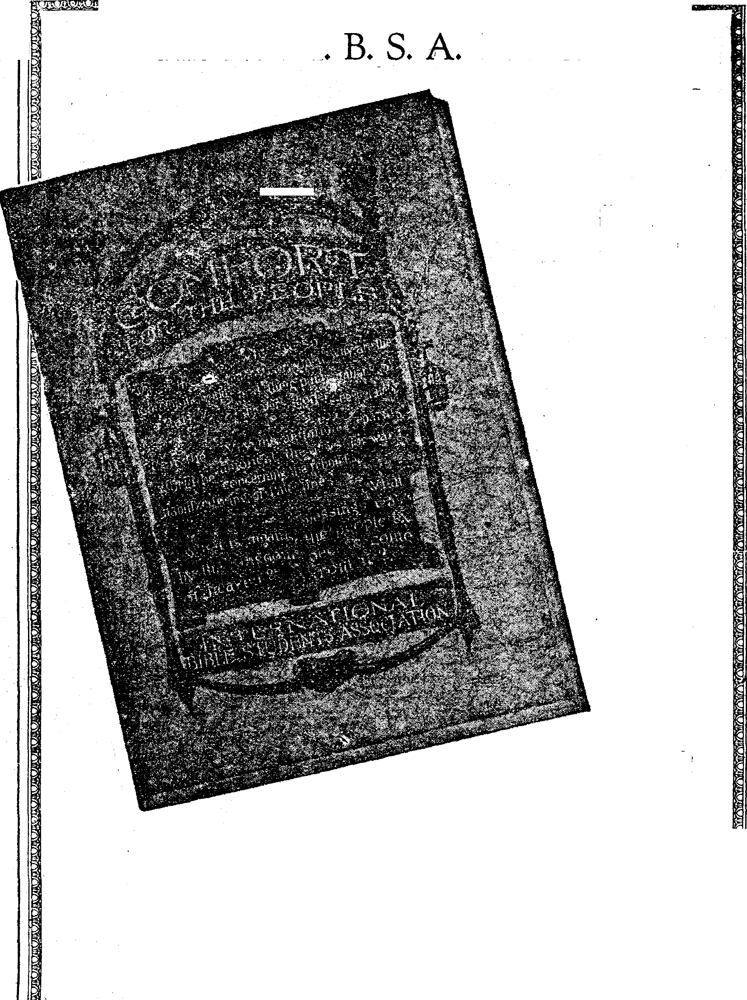

/
sasss^sss
— Social and Educational
Tidbits of World News .........
Increased Size of School Children.....
Priest and Devil Both in- Hard Luck ....
Radio Programs What is Truth?
Political—Domestic and Foreign
British Immigrants Dbdge Ellis Island.....
Ugly Incident at Durham..........
Working Overtime at Gas Masks.......
The Germany-Poland Border Tragedy ......
Freedom of Speech in Italy.........
The Oil War in Syria ...........
The Butcheries at Shanghai and Canton.....
The Sinking of the “Lusitania0 . ........
Agriculture and Husbandry
Cotton is Still King...........
A Record Crop This Year....... . .
The Boll Weevil Curse..........
Exodus of Negro Labor..........
The Move to Piedmont ..........
Science and Invention
The Belts of Jupiter an#, Saturn . . . . , Hardening and Tempering of Copper . . . < A Point ............ . . (
Home and Health
The Case Against Sugar........
Adrenal Glands ....... * .. • <
Travel and Miscellant
Alive Inside A Whale..... . . . .
Religion and Philosophy
What Missionaries in China Now Face . . . In Darkest England
Where Ignorance Is Blister........
Who Shall Live Forever?........
Studies in “The Harp of God”.......
811
812
813
820
822
811
812
812
812
813
813
813
815
803
804
806
809
814
817
819
810
813
818
821
825
825
826
831
i
Published every other Wednesday at 18 Concord Street, Brooklyn, N. Y„ U. S. A., by WOODWORTH, HUDGINGS & MARTIN
Copartners and Proprietors Address; 18 Concord Street, Brooklyn, N. Y., U. 8, A. CLAYTON J. WOODWORTH . . . Editor ROBERT J. MARTIN . Business Manager WM. F. HUDGINGS . . Sec’y and Treas.
Five Cents a Copt—$1.00 a Year Maks Remittances to THE GOLDEN AGE
Foreign Offices : British.....34 Craven Terrace, Lancaster Gate, London W. 2
Canadian 88-40 Irwin Avenue, Toronto, Ontario
Australasian . 495 Collins Street, Melbourne, Australia
South African......6 Lelie Street, Cape Town, South Africa
Entered as second* class matter at Brooklyn, N. X., under the Act of March 3, 1878
■ft
Volume VI
Brooklyn, N.Y., Wednesday, September 23, 1925
■
Number 157
COTTON gives employment to more people than do all other textile fibres, and clothes more people than all other fabrics combined. Cotton is of prime interest to Britain and the . United States. Both are vitally interested in k ______
its manufacture, and the United States in its production.
It is estimated that there are $30,000,000,000 invested in the production, manufacture and I distribution of cotton, with not less than six million persons directly engaged. The estimated world’s production has increased from 1,500, 000,000 pounds in 1850 to ten times that amount in our day.
. For one purpose or another the American people use up an average of one pound of cotton •per person every two weeks. Consider your . ewn apparel, and notice the furnishings about [ you, and you will see why this is so. The cotton p doth and other cotton fabrics used annually m L America would make a strip a yard wide reach-t X
; ing all the way to the moon.
I What an important place cotton plays in the (.life of a civilized people was revealed by the L experiences of Germany during and after the i, World War. At the end of four years the Ger-i man people were wearing paper clothes, using
paper bedding, towels, hosiery, draperies and
tablecloths; and they were even compelled to use paper bandages and surgical dressings. Germany could not get cotton; and she could not produce the wool, hemp and flax needed.
IT IS believed that the art of spinning and weaving cotton was practised in India nearly | four thousand years ago; and although the | Hindu methods are crude and laborious, yet ; their hand-looms have turned out some of the r '
i most wonderful cloths that have ever been r ■ ■
r manufactured.
? [ The calico of the western world is but an
imitation of the Calicut cloth which has been made in India for centuries. The madras cloth is named after the great city of Madras, where thousands of hand-looms are still engaged in its manufacture. Muslin is named after the mosul cloth of Mesopotamia. Cambric is named after the city of Cambrai, France, where it was first made from cotton brought from India.
The cotton goods of China, especially the nankeens, are famous; but how long they have been made no one knows. Cotton fabrics, sometimes interwoven with silk, and of exquisite workmanship, were in use in Abyssinia and in the Niger Valley long before their adoption in Europe. The first cotton mills in Europe were in Cordova, Granada and Seville, Spain, brought over by the Moors from Africa.
When Columbus reached the western world ft
he found the Indians wearing cotton cloth. Cortez found cotton under cultivation in Mexico. When Pizarro invaded Peru, he f ound the Incas wearing cotton clothing. The Portuguese found it in Brazil. Travelers in the Carolinas and in h
Georgia two hundred years ago reported seeing the cotton plant, which at that time, however, was regarded as a thing of beauty rather than of use.
With the invention of the cotton-gin, cotton sprang at once into popularity. There was a time when the aristocracy placed cotton cloth on a par with silk and wool, but as it grew more plentiful it came to be less appreciated. When it began to assume a prominent place in English life efforts were made to bar it from the country, on the ground that it would injure the woolen trades. At one time it was illegal to manufacture cotton underwear in Britain.
fpiHE climate of the United States, its remote-J- ness from the textile centers of Europe, and the fact that the cotton-gin was invented bora have made the United States a natural field for the production and use of cotton goods, and the Revolutionary War almost forced the issue.
It was just a hundred years ago that the first ready-made clothing establishment opened for business, in New Bedford, Mass. The need of some speedy way of fitting sailors during their '■ ■■
brief stay in port was what led to the formation of the enterprise. Now the manufacture of clothing is one of the greatest and one of the most thoroughly American of industries.
Britain has the well-earned reputation of
taking the best cloth, but America claims to be
the best dressed. Much British clothing is still I f
made by tailors who, not so long ago, were a class of itinerants; but in America more and more clothing is factory-made. What was begun as a means of hurrying New Bedford whalers out of port came to be the method of making clothes for slaves in the southern states, fitting out the miners for California, etc., until now almost everybody wears custom-made clothes. The collar industry, which has plants worth millions of dollars, originated with the wife of a Troy, N. Y., blacksmith.
The cotton manufacturing industry stands so close to the agricultural industry that when one suffers the other suffers. When the farmers are unable to buy, the cotton mills are obliged to run on short time, because the farmers comprise a large part of the consuming public. The farmer must get fair prices or he cannot buy. If the prices for clothing are too high he wears his old clothes until they come down.
AT THIS writing it is believed that the cotton crop in the United States this year will be the third largest in history, having been surpassed only by the crops of 1911 and 1914. The area under cultivation is set at 46,448,000 acres, of which 23,000,000 acres are in Texas and Oklahoma, 14,000,000 acres almost equally divided among Georgia, Alabama, Mississippi and Arkansas, 5,000,000 acres in the Carolinas, 3,000,000 acres in Tennessee and Louisiana, and the balance divided among Missouri, California, Arizona, New Mexico, Florida, Virginia, with 38,000 acres in more northerly states.
About seventy-three percent of the American cotton crop is needed at home, but enough goes abroad so that of the ten most valuable exports
for the year 1923— lumber, wheat flour, copper,! wheat, lard, gasoline, tobacco, automobiles, I coal and raw cotton—the last comprised over ] forty percent of the total. ?
Normally the United States furnishes more j than sixty percent of the cotton of the world, and the average annual export for several years was 7,000,000 bales, but the deadly inroads of the boll weevil have materially reduced these amounts in recent years. The damage to the crops by the weevil was set at twenty-one percent of the crop in 1913, twenty-five percent in 1916 and thirty-five percent in 1921. The cotton production of all countries for 1925 is set at 23,900,000 bales of 478 lbs. If the entire world were civilized and able to dress properly, it is estimated that the amount required would be 42,000,000 bales per year.
Of the fifty recognized species of cotton there are only five or -six which enter into commerce, and only two, upland cotton and sea island cotton, which are commercially important. Sea island cotton flourishes along the Atlantic seaboard and in Egypt, where it was first grown
The sea island cotton
has a small black seed, from which the lint separates readily. The lint is from one and one-half to two and one-half inches long, and so fine that a thousand miles of thread have been woven from a single pound. The upland cotton has large seeds which are greenish in color and are surrounded by a short fuzz beneath the long-er and more valuable lint. Upland cotton lint rarely exceeds one and one-half inches in length. The lint is nature’s method of distributing the seeds.
NEXT to the United States(the principal cotton-growing countries are China, India, Egypt and Russia. A small amount is produced in Mexico, the West Indies, Peru, Brazil, Greece, Turkey, Persia, Korea, Japan, Siam and the East Indies. Before any region can become a successful cotton-producing region it must have first-class transportation facilities.
China’s cotton is mostly raised in the vicinity of Shanghai and is used locally. Cotton mills are multiplying rapidly in China, Japan and India. Clnna has now 100,000 mill operatives, and there are more than 230,000 in Japan. The Japanese workers are girls who are literally
I worked to death. Tuberculosis carries them off ■
I so rapidly that the annual turn-over of em-| ployes is 100 percent In China and India male labor prevails.
Many believe that Brazil is the coming cotton country, but lack of transportation facilities i holds it back. Australia can grow cotton cheaply, but the freight rate to England is four and
r"
V.
i
y
r.
one-half cents per pound, as against one-half cent from the United States.
It is estimated that from 10,000,000 to 15,000,-000 bales of cotton can be grown in sections of Texas, New Mexico, Arizona and California where it has not been grown hitherto; and, as a matter of fact, there is a large,cotton development now under way in those areas, stimulated by the discovery that the boll weevil cannot live at high altitudes, and the further fact that cotton is largely a dry-weather plant. The finest cotton in the world is that produced in Imperial Valley, California, where irrigation is the only water supply.
One of the new sources of supply is East Africa, where cotton raising is under way in both Kenya and Uganda. The first seed was brought in by a missionary about twenty-five years ago. When it was planted the natives would not touch it because it was not food and because they could not see any way in which it would benefit them. The first crop was picked by forced means, a native soldier with a loaded rifle standing behind the pickers. But when the crop was gathered, the natives were pleased to have their share of the money; and the enterprise is now well established. The cotton is brought in to the railroad on the head. A native woman is credited with carrying 112 pounds of cotton in this way on one trip from her home, sixteen miles distant from the railroad.
COTTON plants are tender when they first come up. The soil must be warm at planting time and must remain so. Sudden cold will so harm the field that it will have to be abandon-ed. The blooms are white when they first come out; and if water gets within the petals at that
time no cotton grows from the calyx; the mois
ture destroys the ger
■ Cotton blooms turn pink in the second day of their life, then red, and in a few more days
they shrivel and. drop off. The blossoms come at the bottom of the plant first, gradually moving upward, like the hollyhock, until the last, flower crowns the shrub. The shrub grows three feet or more in height and may live for two or more seasons. The Cotton forms in the calyx
• just as the apple does on a tree.
Cotton has many enemies. Some of these diseases are of fungus or plant origin. Wilt, soreshin and rootknot beset the roots and stems. Leaf-spot, leaf-blight and mildew attack the foliage. The bolls themselves are subject to rot and shedding. Animal foes are numerous. There are red spiders, plant lice, cutworms, caterpillars, webworms, borers and, chiefest and worst of all, the boll weevil.
-1- brown snout beetle about a quarter of an inch in length. It has a tong, strong beak. It feeds on the cotton plant and on nothing else. The adult female punctures the young cotton boll and deposits an egg. The egg hatches into a grub, which works inside the boll until ready to come out. It leaves behind it a hole through which moisture enters and utterly ruins the cotton.
The boll weevil originated in the tropics; but the cotton growers are learning from experience and with dismay that whereas the winters used to kill the weevil it is gradually becoming acclimated; and as one pair of boll weevils will raise a family of 12,000,000 progeny in a single season some idea can be formed of the trouble with which the cotton growers are confronted.
For many years it was believed that no remedy would avail. Twenty years ago the government introduced an ant from Guatamala as
an enemy to the boll weevil. It was an enemy all right, but the weevil went on multiplying almost as rapidly as if the ants were not in existence. Every kind of device has been tried against these insects, even vacuum cleaners. Some advocated early planting, and others late planting of the cotton. In some districts millions of punctured cotton squares were gathered in the vain effort to thin out the pests. Millions of pounds of cottonseed have been disinfected so as to reduce the planting risks. Barricades were proposed in which the raising of cotton in certain areas should be restricted for
BM
Brooklyn, N,Y<
a term of years, but the bugs jumped the barriers.
S Some relief has been found in patches where chickens, geese and guinea fowls could gain access to the bugs. Relief has also been obtained by brushing the plants with the limb of a scrub pine. The weevil falls from its cool retreat to the hot ground, where it cannot survive; and the eggs on the cotton are destroyed. It is claimed that one workman can cover ten acres in a day with excellent results.
is the dusting of the growing plants with calcium arsenate; and unless the producer will agree to the dusting of his fields he can now, in many districts, obtain no loans on his crop. At first the calcium arsenate was applied in a, mixture of two pounds of the arsenate and two gallons of molasses. On six acres thus poisoned the yield averaged 700 pounds of seed cotton per acre, while in adjoining fields, with land equally good, but not poisoned, the yield averaged 420 pounds. The. farmer who produced these results claims that neither poison, fertilizer nor anything else will take the place of rapid and ample cultivation.
In 1923 about five percent of the total cotton acreage was dusted with arsenate. The best time to dust is when the air is calmest. If the dusting can be done at night, when the dew is on the foliage, so much the better. There are now about forty models of dusting machines on the market. Much of the dusting is done from airplanes which, flying low over the fields, can cover a great area efficiently in a brief time.
In order to dust the entire cotton area, at the rate of twenty pounds of arsenate to the acre, it is calculated that 700,000,000 pounds of the arsenate would be needed annually. The great demand for this chemical has led scientists to strive for some method of producing the material cheaply, so that all fields can be treated.
Convinced that the boll weevil would virtually put an end to the cotton business the citizens of Enterprise, Alabama, in 1919 erected a monument to the boll weevil, on the ground that this little creature had commenced the emancipation of the southern cotton growing interests from the complete slavery of dependence upon cotton. Throughout the community attention was given to the raising of other crops, such as peanuts, corn, hay, sweet potatoes, sugar beets, hogs and cattle, with excellent results. This diversification of crops is spreading throughout the South.
rpWO items regarding improvements in Gotten culture come from Texas. One is from Galveston county, where a farmer has succeeded in grafting cotton plants to the roots of mulberry trees and is growing cotton trees. According to the Dallas Farm News there is by actual count 917 bolls on one of these trees, and the trees are producing cotton at the rate of five bales pei- acre. For further information address V. H. Scoffelmayer, of the Dallas Farm News.
The other item is regarding the development of Mebane triumph cotton, by A. D. Mebane, of Lockhart, Texas. After a violent wind storm he collected all the stalks that withstood the damage. Year after year he selected and planted the seed from the bolls that contained the most lint. Year by year the-percentage of lint increased, the stalks grew smaller, the roots longer, and the joints stockier and tougher. After fifteen years be began to receive his reward, and hundreds of cars of Mebane seed are now shipped every year to all parts of the South.
It may be that cotton will be replaced by something better. A wild pineapple which grows in Central and South America produces a fibre equal to the best flax which the Indians use for all their finest fabrics, fish nets and lassos, where great strength, pliability and resistance to the weather and to wear are required. This fibre now grows wild in almost unlimited quantities, reproduces itself with extraordinary rapidity and, like cotton, goes straight from the field to the cleaning machine.
It is said that from the root of the cotton plant the Negroes brew a medicine which they regard as a sure cure for the dropsy.
FOR many years the South has been experiencing an alarming exodus of Negro labor to the North. Many have been the remedies proposed. A measure in the Alabama .legislature would impose a $5,000 fine on the enticer, while a measure proposed in Georgia would give the enticer three to five years in the penitentiary.
In 1922-23 it is estimated that 478,700 Negroes migrated from the South. Restriction of ■immigration had reduced the supply of foreign-horn labor available for northern mills and factories, and the Negro was a capable and tract. able substitute ready at hand.
The Negro-had good reason, however, to wish ■ to make a change. Ever since the Civil War the custom of cropping the land on shares has ।prevailed in the South. In a good year the Negro cropper would make enough from his share of the cotton to provide himself and his ^family with sufficient food and an adequate sup; ply of comfortable clothing; but when crops were j poor it jneant misery, and when the boll weevil ' came the crops were virtually ruined, and neith-S er the landlord nor the cropper could meet the ‘ conditions.
j. The shortage of Negro labor has seriously | affected cotton growers. They have been hurt I too by increased costs of the labor which is E available. Before the war a good cotton-picker I would bring in about 125 pounds in a day, while b an expert would bring in twice as much. At 1 that time sixty to seventy cents per one hundred f pounds was eonsidered a fair price for the I work, but now the picker is poorly paid even if
t-.-
he receives double the amount.
In some districts of the South (Wichita Falls,
L
Texas, is named) cotton is now picked by vacuum machines, with a claimed rate of eighty pounds per hour per man, or three bales of cotton per day with six trained men. Moreover, it is claimed that vacuum-picked cotton is so much cleaner than hand-picked cotton that it brings two cents more per pound, or more than the cost of picking by hand.
Many of the croppers of the Carolinas are poor whites, Americans of Scotch and English ancestry, among whom there has been no admixture of foreign blood since before the Revolution. These poor unfortunates own nothing but their clothes, a few pieces of household furniture and a team. During the off season they wander from place to place looking for a better field to crop than the one worked the last season. The Negroes look with scorn upon these poor illiterate whites.
IT IS the way things frequently go in this world that the man who invented a way to separate the seeds from the cotton and thus really made the cotton business, never received any benefit from the invention. Eli Whitney, a law student, had to work under great disadvantages while perfecting the cotton-gin; but as soon as it was perfected his shop was broken into and. many machines were made before he could get his device patented. The state of South Carolina gave him $50,000, but it was all lost in lawsuits. He made a fortune subsequently from the manufacture of firearms; but from the cotton-gin, perfected in 1793, he had no reward but the satisfaction of starting one of the world’s greatest industries.
Sixty years ago the cotton-gins were surrounded by huge piles of seed for which no uses were known. The planters regarded the seed as waste and took no interest in the earliest attempts to make cottonseed oil. The idea of making the oil came from Marseilles, France. Today the value of cottonseed products is in excess of $150,000,000 annually.
Now the house painter arises in the morning from a mattress stuffed with cottonseed linters, combs his hair with a celluloid comb made of a combination of nitrated cotton linters and camphor, draws on his artificial silk socks made from nitrated cotton linters, and sits down to breakfast in a kitchen whose floor has been washed with a washing compound made of a cottonseed derivative. His eggs are fried in hydrogenated cottonseed oil; he spreads a napkin on his knees that was cleansed with a soap containing cottonseed oil as an ingredient, and eats from dishes that were cleansed with a soap made of the same materials. He rides to his work in a Ford cushioned with artificial leather made by coating cotton fabric with a mixture of castor oil and nitrated cotton linters. He paints a roof with a tar residue derived from cottonseed, and for his lunch has some sardines that were packed in cottonseed oil. When his day’s work is done, he renders a bill on paper made from cottonseed linters.
Cotton stalks and leaves have considerable value as forage; and if plowed under without having been burned the bare stalks aid materially in maintaining the fertility of the soil. For this reason it is not practical to burn over the fields at the close of the season, and this method of getting rid of the boll weevils cannot be used advantageously. In Egypt and other countries where fuel is scarce, cotton stalks are collected and used for fuel. It is claimed that 100 pounds of nitrate of soda will give an average increase of 186 pounds of seed cotton.
nachine in general use.
It is one of the few in
Cotton-gin buildings are made only large enough for the machinery which does the ginning, on account of the constant danger of fire. No cotton is stored in the gin building proper. The gin which Eli Whitney invented is still the ventions which seemed to spring spontaneously from the brain of the inventor as a perfect machine.
IN THE year 1801 cotton brought forty-four cents per pound in New York. In the next forty-five years the production was greater than the demand, and in 1844-45 the price was less than six cents per pound, the lowest ever known. During the Civil War the price rose to over one dollar per pound. The government makes a strenuous effort to stabilize the cotton industry by publishing frequent bulletins regarding crop conditions. In all there are some 84,000 correspondents and cotton reporters. About half of these report direct to Washington, and the balance through state agencies.
There is the same gambling in cotton as in wheat and other necessities. The last ten-million bale cotton crop was sold in Wall Street three times. One of the bucketers admitted on the witness stand that it was his custom to go down into the pit and announce that he would buy cotton at a certain figure. His fellow-conspirator in the pit would cross his fingers, making it appear that a sale had been made, and would then pay back any monies paid in.
In 1914 the cotton market collapsed, and there Was a great cry of “Buy a bale, buy a bale” sent out broadcast. The public responded and restored the market. Now the men who sent out .the cry are demanding that any person who buys cotton must take $20,000 worth or nothing.
The Sapiro plan cooperative marketing associations have proven a success only in the period of peak demand. Whenever the so-called fixed price has been too high the manufacturers have
held off their purchases and waited for prices to drop.
■ ' F
Cotton Manufacturing
? -
A 6 IT was the invention of the cotton-gin •f-*- which made America a cotton producing country, so it was the inventions of James Hargreaves that made England a cotton manufacturing country. And, like Whitney, Hargreaves received little benefit from his inventions. Hargreaves was a Lancashireman.
In 1760 Hargreaves'invented a machine for carding cotton, for use instead of the hand cards formerly used. Subsequently • he invented the spinning-jenny, enabling him to spin with several spindles at once. With the new machine he was able to turn out more yarn than his neighbors; and they broke into his dwelling and de* stroyed his machine, 'virtually forcing him to leave the neighborhood. The only recognition ever shown this man for these two inventions, which were the making of the cotton manufacturing business, was a grant of £250 allowed to his last surviving daughter nearly seventy years after his death.
Lancashire, where Hargreaves invented his carding machine and spinning-jenny, has been the center of the cotton manufacturing industry for over a hundred and fifty years, and is in some sense of the word the world’s peace center ; for while others, for one reason or another, may be interested in war, the cotton spinning business needs markets, world-wide markets, and peace, in order to prosper.
As a Consequence of the World War Lancashire has been hard hit. A letter from a gentleman in Manchester, in close touch with the cotton manufacturing industry, expresses the conviction that unless immediate and effective relief comes soon half of the Lancashire cotton manufacturing industries will be in extremis. In other words, the restlessness of Europe is heading one of Britain’s greatest industries toward bankruptcy and disintegration.
The distribution of the 155,000,000 spindles of the world is as follows: Great Britain 57,000,000; United States 37,225,000; Continent of Europe, 43,000,000; Mexico, 7,750,000; India, 7,350,000; Japan, 4,750,000; China, 2,500,000; Brazil, 1,750,000; Canada, 1,000,000. .
fir ■■
1/ jJ'7 fc-;
[
The American Center
THE American center of the cotton manufac-taring industry is very like to Lancashire in many ways, and something like what is happening to Lancashire is happening to New Eng. land. There is reason to apprehend that as a textile center it has seen its best days.
There are 111 mills in Fall River, Mass., with at least 100,000 of the 131,000 citizens of that city depending for their living upon the mills, but some idea of their condition may be gained from the fact that only last year the mayor of the city asked the Massachusetts legislature for authority to borrow $500,000 above the city’s legal debt limit in order to care for the needy unemployed.
While the unemployment was at its height the press of Fall River refused to accept advertising offering employment outside of Fall River to cotton mill workers; and as.soon as the unemployment was over, the mills, some of them, adjusted the unemployment problem by rearranging their machinery so as to give additional looms to each worker1
The “Encyclopedia Britannica” gives the manufacture of cotton goods in the United States as $339,000,000 in 1900, $628,000,000 in 1910 and $1,948, 000,000 in 1920.
There is a tariff of sixteen cents per pound on all unbleached cotton cloth imported into this country, eighteen cents per pound on bleached goods and twenty-two cents per pound on printed, dyed or woven figured. This has enabled New England cotton manufacturers to keep up the prices to consumers so high that at least one mill at Lawrence, Mass., in the last generation has paid its stockholders in cash the par value of its capitalization four and one-half times over, and has distributed $9,000,000 in stock to its stockholders besides granting them the privilege of buying shares at substantially less than the market price. Persons buying shares in this way do not have to put up any money, as the banks will loan them the money and allow the dividends to pay interest and principal. It is the softest way of making a fortune that is known.
IF THE New England cotton manufactures are to be believed, they fear that their businesses are to be graduaUy withdrawn from them and reestablished in the Piedmont regions of North and South Carolina. In an address before the National Association of Cotton Manufacturers, President Amory of that association said: X
Our natural handicaps in the nature of transportation distances are great. Our long experience and, therefore, great skill can overcome some of these things, but we shall have to work hard. We cannot overcome the handicaps of the forty-eight-hour law against fifty-five and sixty hours’ running time, and not to speak of six extra holidays. The record is clear enough, the cotton industry is gradually slipping away. In the past, various factors have helped us. Massachusetts had far more skilled help and oversight. We had the finishing works where southern goods must be shipped to be bleached, dyed or printed. Now, there is excellent skilled help and supervision in the South. Many well-posted manufacturers have gravely considered and state that it is folly to- enlarge Massachusett’s cotton mills.
In 1880 there were only 687,066 active spindles in the South as against 9,966,369 active spindles in the rest of the country, but in 1922 the active spindles in the South were 15,613,632 or nearly equal to the 16,885,692 active spindles reported for the rest of the country. In the Piedmont section one can now travel for hours at a time and never be out of sight of a mill. There are 311 cotton mills in North Carolina and 132 in Georgia.
The southern cotton-mill owners do not want northern labor. It is too well posted and wants too many things. As a general rule throughout the southern cotton-mill section the textile workers are set off by themselves, and are not considered as having any community rights. All the members of the family work in the same mill, the mill owns the house in which they live, and if one member of the family displeases the , mill management it is a common thing for the mill owner to discharge the whole family and put them out of their home. The homes are mostly of the bungalow type, and fitted with electric lights and plumbing.
The Providence News seems to think that the talk about moving the New England cotton mills south is largely propaganda, put forth to frighten the northern milt workers into longer hours and less pay. At least that is what we gather from the following, and perhaps the News is
There is no more prospect that the New England textile industry will move to the South than there is that the first Napoleon will be recalled from his grave and made emperor of Europe, To begin with, there is not at this moment, and there never was, sufficient labor in the South to make the textile factories there a really important competitor of New England products. That is why the finer grades are made here and why even the skill of our operatives on cheaper qualities of manufac
ture more than balances any difference in the wages paid by the textile makers in the Carolinas. Were the mills of New Bedford, Fall Biver and Manchester to move south they would have to take all their operatives with them or find new ones from the New England states to fill the jobs. They could get no original labor down there. “
The Case Against Sugar By Dr. Philip M. Lovell, in the Los Angeles Times
IN THIS column the statement has often been made that sugar is a starvation food. Its physiological effect on the body has been demonstrated again and again. In this issue I propose to show how, in the technical manufacture of sugar, it becomes devitalized, demineralized, and robbed of any life-giving qualities it once possessed.
Commercial sugar, as you are aware, is made from cane sugar and sugar beets. At the present time beet sugar is very much more extensively used than is cane sugar. Hence the manufacture of beet sugar will be discussed.
When the beets are received at the sugar factory, the tops and a small part of the neck of the beet are removed. The purpose is to free the beet from the mineral matter it contains, as it interferes with sugar crystallization. Therefore, the first robbery of the precious salts is accomplished before the beet undergoes -any chemical change.
The beets are then washed. The juice is extracted by what is known as the diffusion method. This consists of cutting the beets into very thin slices and running a stream of warm water through them. The sugar is dissolved and passes through with the water. When this juice emerges from the beet it is as black as ink. Now comes the first of the devitalizing processes.
I Arne or carbon dioxide is added to it to precipitate some of the impurities found in this inky black beet sugar. The clear juice remains and is then centrifuged; that is, it is whirled around until it separates into two parts—molasses and raw beet sugar.
The raw beet sugar is then thoroughly heated, destroying every particle of organized lifestill be further phemically treated. It is still not sufficiently white and ghastly.
celled substance in it.
But even now it must
There are now added strong minerals such as acid calcium phosphate, phosphoric acid, and milk of lime.
Then to carry away any suspended protein matter which may remain, the sugar manufacturer uses blood albumen from the slaughter houses.
Again the manufacturer makes another purchase from the slaughter houses—bone-black from “canning” or low-grade animals. This bone-black or animal charcoal is used as a filter further to “purify” this mixture called sugar.
Thus far the sugar has been thoroughly heated twice. Now it must again be thoroughly boiled to separate it from the syrup. You may think that it ought to be ready for consumption now—but—not yet.
The last touch of shimmering whiteness must be added.
It is then bleached with a strong bleaching agent such as blue water. This process holds true with first-grade sugar but it becomes even worse with low-grade sugars. These inferior sugars are extracted from the molasses byproducts by the action of strong chemicals such as calcium and barium hydroxide. The molasses itself is used in gelatin and jams and in many baking products.
Commercial sugar is representative of the ultimate extreme in food degeneration. Merely to state that it is a starvation food is putting it mildly. The term food is a misnomer. Sugar is the most injurious product in our national dietary with no exceptions and under every possible condition. o
[Radiocast, with other items, from Watchtower WBBR on a wave length of 272.6 meters by the Editor.]
■fl- _
■L ( -j
| A TASKA’s great glacier, the Columbia, is a A river of ice four miles wide and 300 feet j high, moving at the rate of an inch an hour.
OLIVIA, the cloudland republic of South America, has a hard time getting down to
I the level of the rest of the world. A new rail-I road has just been completed which connects I this roof of the South American continent with t Argentina and thus, by rail, with Brazil, Para-[ guay, Uruguay and Chile. There is an older ; route via Peru.
L
k b P:
Dr. Carl Peters, whose discoveries in Rhodesia have helped to settle the question of the source from whence came Solomon’s gold,
t points out that the name Africa, which is Latin : in its origin, is an adjective taken from the He-j brew word Ophir. The Biblical expression i '‘gold of Ophir” simply means “gold from £ Africa”, and it is significant that Africa is to this day the world’s greatest source of the yellow metal.
Mr, Bert Collyer, newspaper correspondent in Germany, reports that in the city of Berlin alone there are not less than thirty thousand street walkers,’'young girls without occupation and without means of livelihood, hungry, hopeless, not born to crime, but pressed into it by the impossible conditions which the war thrust upon them.
Austen Chamberlain, foreign secretary, said in a recent speech, “Fear broods over Europe. Unless we can alter the outlook, relieve these fears and give security in the international sphere, it has been brought home to me every day that I pass at my work that Europe is moving uneasily, slowly but certainly toward a new catastrophe.” Incidentally, we may add, British scientists have killed 1,001 animals during the past year in poison gas research work. Coming events cast their shadows before.
THE Chinese Information Service in Paris has formally claimed that America was visited by Chinese priests as early as 458 A. D. and phant head, which must certainly have come from Asia. A squatting figure of Buddah was found in Mexico. The Japanese and the North American Indians can hardly be distinguished from each other when dressed in similar cloth-
BY AGREEMENT between the two governments the United States government wTill station a medical and an immigrant inspector at six of the chief British ports to do the work which has hitherto been dona at Ellis Island. This arrangement is to have a three months trial and if it works satisfactorily the bulk of British immigrants hereafter will pass the Island by.
IN WALES, during the month of July, in a strike caused by the removal of one miner, a band of miners started on an all-night march to an adjoining district, growing from an incipient 200 to a total of 9,000 men. Arrived at their destination, they hauled a trainload of workers out of their train and sent them home.
SARGASSO Sea is like the missing link.
There is no such thing. The “Arcturus” scientific ship which set out from New York in February, having as one of its main objectives the far-famed area of sea-weed, crossed the equator eighteen times and ploughed through plenty of seaweed, looking for the mysterious area; but it never came to light.
WHILE the Scopes case was on in Tennessee the British newspapers gave it unusual attention. The London Daily Mail ran the story of the trial under the general head of “Monkey-ville”. A part of this interest was due to the fact that the father of Mr. Scopes wTas born in London.
T) RITAIN faces a serious question in the mat-ter of providing food for her standing army of one and one-quarter million unemployed. Agents are now in America studying the cost of the principal items of food consumed by the British people and it may be that the government may take over the retailing of these foods as the only way of meeting the situation.
AN ODDLY interesting report comes from London that school desks which lormerly fitted the grades very well are no longer large enough. It also states that London boys and girls, probably as a result of exercise in the open air, frequently attain heights of from five feet eight inches to five feet ten.
AT DURHAM, England, the bishop expressed views not favorable to the miner’s side of the wage controversy. Thereupon the miners hoisted a banner bearing the words “To hell with bishops and deans: what we want is a living wage.” The bishop made the mistake of attending the demonstration. He was recognized and in the scuffle which followed lost his hat and umbrella, was kicked and cuffed and came near being thrown into the river. The bishop business is not nearly so good a job as it used to be.
Working Overtime on Gas Masks
IN A sermon at the City Temple, Glasgow, Dr.
Norwood made the statement that according to his personal knowledge the Woolwich arsenal and other arsenals in Britain are working overtime in the manufacture of millions of gas masks, which will be issued to every man, woman and child in the danger zone of air operations when the next war starts.
Ate Up His Wife’s Will
THE rhymester who was asked to make something rhyme with Timbuctoo brought to light the couplet which terminates with the information that the cannibals near that city “ate up the preacher and his hymn book, too”. Something like this -happened recently in France. Aj man went to the notary to see his wife’s will; and when he found he had been disinherited suddenly seized, chewed and swallowed it.
MORE fortunate than the courageous but unwise bull that tried to stop a railroad train, a French bull finished up an airplane that had been compelled to descend in his pasture. He misunderstood the rumbling of the motor, and before the matter could be explained to him left the machine a wreck. This happened somewhere in northeastern France.
THE trade depression in England has extended to Ireland, where there are 160,000 out of work. In the Irish Free State it is said that there are 30,000 perspns now unfit for work because of lack of proper food. Machinery lies idle and rusting.
THE Labor Ministry of the German government stated in August that there were then 600,000 Germans out of work and expressed the opinion that by October first there would be at least 700,000 idle. Many more are working only two days a Veek. The crisis is said to be due to the fact that money for industrial purposes is too high, ranging from nine to eighteen percent, and making it impossible to conduct business at a profit.
The Germany-Poland Border Tragedy
FIVE years after the plebiscite in Silesia the
Polish government has expelled from the country those who voted at that time in favor ■of a German government. Germany has retaliated by expelling from her own soil those who voted in favor of Poland. The result is fifty thousand people, on both sides of the line, suddenly torn from their homes and properties of all kinds and sent into what is to them a foreign country whose language even, in some cases, they do not understand. Moreover, as industrial conditions in both countries are deplorable, they have little or no chance of obtaining employment.
IN THE past twelve months the number of suicides in Tokio has averaged considerably more than one hundred per month. Only four persons in all that time committed suicide by shooting. About half of them went by the horrible method of poisoning.
■i
s? d $
r
I ■ t
WHAT the loss of freedom of speech in a country really means may be seen from the
fact that at Palermo, Sicily, recently the Fascisti attacked ex-Premier Orlando of Italy with sticks, stones and revolvers for uttering the following exceedingly mild criticism. He said, “I do not need to tell you that we do not live in a regime of liberty. Then it is infinitely better to live under an autocratic government. We cannot deny that autocratic governments have written ten luminous pages in the history of peoples. Under autocratic government citizens’ liberties may be restricted, but they are guaranteed by laws which may be severe but constitutional.”
Italy the Danger Spot
AT THE International Institute of Politics at Williamstown, Mass., the opinion is said to be current that Italy is at this time the most important danger spot in the world, due to the fact that she is overpopulated, has insufficient colonies, cannot send her surplus to America, lacks coal and other raw materials and has the third largest standing army in Europe. ■ f
Russia Buys Plows and Tractors
DURING the past year one Russian trading corporation has purchased in America and shipped to Soviet Russia no less than nine thousand tractors. Crop conditions in Russia this year are said to be very good, which accounts for the continued demand for up-to-date machinery. •
TN THE neighborhood of Minsk, Russia, a A priest hired a young man to dress up as a devil and perform certain acts of mischief, hoping thereby to increase his influence. The scheme worked perfectly until the Soviet authorities sensed the situation, when they sent the priest and the devil both to prison for a long term of years, so says the St. Louis Post Dispatch.
The Oil War in Syria
THE French have recently sustained a loss of eight hundred in killed, wounded and missing, by an uprising in Syria. A Turkish passenger on the boat which brought the details from Beirut to Marseilles declared that the uprising was the immediate result of serious quarrels which had arisen among oil companies.
MORE news comes from the Orient regarding the official murders at Shanghai and Canton. In both instances the students were unarmed, and the only thing charged against them is that they shouted. Well! Suppose they did shout! If an American shouts in America, is some Italian general going to turn the machine guns on him? That is in effect what happened in both Shanghai and Canton.
In the Shanghai murders the foreign police inspector admitted that he gave the command “Shoot to kill” only ten seconds after warning the crowd; he also admitted that his only warning was to hold up his pistol, and that few of the crowd could see it; moreover, none of them could get away in ten seconds.
In the Canton murders, English soldiers fired twice over the heads of the procession of unarmed patriotic students and then turned their machine guns on them. Every one of the American staff of seventeen teachers of the Canton Christian College denounced the outrage as wholly merciless and unjustified.
ACCORDING to the Bible and according to common sense the dead are dead, awaiting a resurrection, but the fallen angels continue to misrepresent the facts and to palm themselves off as deceased humans. Lord Northcliffe is supposed to have appeared several times to the man who succeeded him in the newspaper world, but it is significant that nothing rational, sensible, honest or worthy of attention has ever come from any such interviews. The only purpose of these demons, or devils, is to deceive and annoy mankind.
ONCE every year the bees give a lesson to the whole human family. Along about the last of July the workers take possession of the hives and woe betide the drones, old or young. Up until that time the drones have had all the best of it, superior cells, more time to develop, and nothing to do but live from off the workers; but their end shows that it does not pay to have things too soft. Moreover, the workers get more real satisfaction out of life anyway.
ROM Mr. J. Lewin’s work on “Earth’s Changes” we glean some facts that may be of interest to our readers. Mr. Lewin quotes astronomers as saying that the belts of Jupiter are commonly arranged with a certain symmetry on either side of the great equatorial bright belt, but that sometimes there is a rather marked contrast between the southern and northern halves of the planet. In color the dark belts are usually of a coppery, ruddy or even purplish tint, while the intermediate light bands vary from a pearly white in the equatorial belt, through yellowish white in the middle latitudes of both hemispheres, to a grayish or even bluish tint at the poles.
The number of belts is variable. Sometimes only one has been seen, at other times there have been as many as five or six on each side of the planet’s equator. In the course of a single hour Cassini saw a complete new belt form on the planet; and on December 13, 1690, two well-marked belts vanished completely, while a third had almost disappeared in the same short interval of time. On occasions the belts widen their ; limits and become irregular at the edges. The surface of Jupiter is swathed with a mighty ! volume of clouds so dense and so impenetrable that the most powerful telescopes have never been able to pierce through it to the solid surface beneath. *
Belts Caused by Electrical Discharges
GATHERING from the above evidence that the belts about Jupiter are caused by electrical discharges, Mr. Lewin goes on to say:
Saturn, 75,000 miles in diameter, is a far grander object on which to observe the full effect of the electric discharge. Not having such a great speed in revolving at its equator as Jupiter, the ellipticity is far greater; therefore from our position on the earth, we can at different times get a view of its poles, with a side view of the ring by which it is surrounded. We find that the same action affects it, but its greater size compared with our earth makes it revolve much faster; consequently the friction at its equator, where it travels and revolves at the rate of 25,500 miles an hour, must be far greater on our earth. The flow of the magnetic current to its poles must increase proportionately to the rate traveled; and here again the discharge of electricity from the center of the planet, where the currents through its poles meet, is beautifully seen in a blaze, forming a ring or rings around about the whole planet. That this must
ML*
be the correct view of it we have the assurance from the observations of different men who have made a study of it; and according to them the ring cannot be a solid body, as ■ it always keeps changing or dividing. It is scarcely ever seen even by the same person on different days alike, all proving to us that it cannot be a solid body by which the planet is surrounded. I1
Ice Caps on Our Earth
Mr. Lewin has gone to the trouble of collecting a vast amount of data to show the gradual removal of the great ice-caps which settled at the poles on our earth at the time of the Deluge. He thinks that this was largely accomplished by the earthquake at the time of the Lord’s death. We think otherwise; but the data which he has collected are valuable, nevertheless. He sums it up as follows: t
These writers from different districts of Europe, each writing independently of the other, all agree in describing these districts of Europe in which they lived or had visited at the time they wrote, as cold and inhospitable. The ground was covered with ice and snow to a great depth for the most part of the year. Only for a short period in the summer months were the lowlands of Albion, Germany, and France and of the other countries of that district of Europe free from their covering of snow. The higher mountains in these districts were covered with snow the whole of the year. The most northern countries, Russia, Norway, Sweden, and most of Germany, lands in the northern districts of Europe, were unknown before the Crucifixion or only mythically inhabited, all proclaiming that the border of the snowcap from the pole at that period was through the center of Europe. —
The evidence we have of the sea further confirms the thought that the ice-cap of the pole reached down well into the center of Europe before the Crucifixion, as we read that six days’ sail north from Britain the sea was frozen into slush and that in summer there was half a year of day; that there was snow in Gaul, and that some parts of that country were not known by its inhabitants to have been passable in the winter season. In Spain the snow from the mountains melted in such floods as to make the rivers impassable about harvest time; for we read that at the time “there was no com in the blade, and it was nearly ripe”. And in Italy the Alban hills were nearly covered with snow on the first approach of winter and the rivers frozen. The Tiber being frozen over was spoken of as an ordinary occurrence ; and we read. of seals in the Mediterranean Sea that were counted like flocks. The different armies of that time, we read, had to winter for several months each year in town and camps, in countries where there
would be no occasion for them to do so at the present covered with trees and shrubs, through which we can
time. travel in summer or winter without experiencing that
Districts which were covered over by snow and frost great severity of climate that was recorded there by the most of the year have now given place to fruitful lands, writers before the time of the Grucifixion.
to
Sinking of the “Lusitania” By Robert Ranson (Florida)
T) ROB ABLY no one happening of the World
War made so deep an impression on the world as the sinking of the British steamer ‘Lusitania” in May, 1915, at which time 119 Americans lost their lives* At/that time, if you remember, we were constantly told that we must be neutral even in our thoughts, and that the
destruction of Belgium and of northern France and its architectural gems was no concern of ours.
In October, 1910, it was my privilege to make a trip to England on this noble boat, at that time I think the largest afloat, except her sister ship, the “Mauretania”. I had crossed the Atlantic five times previously on other boats, and had sailed round the world in the old days when the voyage to and from Australia and New Zealand took from one hundred and twenty days to six months, according to the winds encountered. I was thus no stranger to ocean travel; but my trip on the ‘Lusitania” will ever be one of the pleasantest recollections of my life.
The ‘Lusitania” was at that time the fastest, best warmed and ventilated, and most comfortable ship it has ever been my good fortune to sail on. I loved that boat from the time I set foot on her till I left; and I often wonder how my beautiful cabin looks today, occupied as it probably is with sea monsters and possibly the remains of some unfortunate victims, at the bottom of the deep Atlantic about thirty-five miles off the coast of Ireland.
My first impression on looking over the ship was the appalling scarcity of lifeboats and liferafts ; and in consultation with a friend we de-* fl
cided, after a careful once over, that in case of a wreck not over eight hundred out of the total of twenty-eight hundred souls on board could possibly escape a watery grave. Nobody worried, however.
The next thing we noted was that every officer and all of the crew had on their caps the mystic letters R. Ni R. (Royal Naval Reserve) On asking the meaning of this we were informed that the British government had subscribed onefourth of her total cost, about half a^million pounds, so that in case Great Britain ever went to war this ship and its entire crew would he ipso facto a unit of the British navy. Every sailor on board was in fact a naval man, and had served his time in the navy; and a finer lot of boys I never saw on any transatlantic steam-i er, quite different from the ordinary deck-swabbers that usually make up the crew of this class of passenger vessels.
ened by finding an old friend on board, Lord Northcliffe, whom I had met in his humbler Harmsworth days in Florida. On the second day out his name was published in a supplementary passenger list, it not having appeared in the first one.
After reading it I gave my card to the purser and told him to take it to Lord Northcliffe’s room and request an interview for me. The purser seemed to have that inherited dread of a real live lord that afflicts most of his race and told me two or three times: “I don’t know whether me lud could see you or not”; so I told him the best way to settle his doubts on the matter was to try to find out. Finally he summoned up sufficient courage to tap at the door of the great newspaper-man’s apartments handed in my card.
the are
Instead of shrivelling me with a glance noble lord called out: “Hello, Ranson! How you? Come in! How did you know that I was on. the ship?” I informed him that his name was on a supplementary passenger list; and he said: “Durn it! I told them not to publish my name.” I asked: “Why didn’t you want your name published?” “Well,” he replied, “you know these American reporters, and what a bole they are.” I said: “Well, you ought-to be willing to.take your own medicine.”
This accidental meeting was merely an inci-
dent of the trip but, curiously enough, connected with my later impressions of her final fate, and would have had no bearing on this narrative had not his lordship informed me that the chief engineer had invited him and his party to take a complete look over the wonderful ship and he asked me if I would like to join the party. This invitation I eagerly accepted. The following day at lunch the steward told me that the inspection would come off at two p. m., and I was on hand.
THE first thing we were shown in the chart room were twenty-four electric push buttons, and were told that the great ship was divided into twenty-four water-tight compartments divided one from the other by a watertight sliding door; that each one or all of these could be immediately closed in case of accident; . that any six compartments could be broken from the outside and the rest would prevent her from -sinking; and that in fact the vessel could be cut in two and the two halves would float long enough -till they got assistance to prevent any loss of -life. Of course her construction was known to
all marine engineers, and the point I have to
make later in this connection will then be seen.
I may pass over the wonderful engines, etc.;
for in a few days we sighted the coast of Wales
and stopped o ff Fishguard to send the mails and London passengers ashore.
Thirty-two thousand sacks of mail were put off into two good-sized steamers, and as we saw sling after sling go over the side it seemed as if the weight would sink the tenders. The rest of the trip to Liverpool was uneventful and would have remained a pleasant memory the balance of my life and possibly not written about or referred to, had it not been for the shocking news communicated to me one night after I had retired that she had been sunk by a submarine. : Possibly a month later I began to worry about not having received any answer to an important letter I had written to England, and it suddenly struck me that probably my letter went down in the “Lusitania” and was never delivered in England at all.
With this thought in mind and remembering what a powerful mail-carrier she was, I wrote 'to the Cunard Company in New York and asked them whether much mail had been lost at the time of her sinking and whether any of it had been recovered. Their answer was that on her last trip she had carried only ninety-seven sacks of mail and only that mail specially addressed by the senders to go on that boat.
NOW comes the summary: If one department of the United States government took so much stock in the warning that the ship would be sunk that they (the P. 0. authorities) would not send the mails in her, why did not some other department of the government forbid the company to carry a shipload of innocent passengers on a vessel carrying arms and ammunition, a boat advertised to be a unit of the British navy?
Every wireless man on the coast knew that the German wireless at Sayville was reporting day by day the progress of the ill-fated ship to German submarines hidden under the west coast of Ireland, but we were neutral and allowed this villainy to proceed unhampered. .
In February, 1918, you remember, Woodrow Wilson sent out the various members of his cabinet on a lecturing tour round the country to tell us why we had entered the war; and Secretary Houston, among other remarks made in Morocco Temple, Jacksonville, Florida, before eighteen hundred people said: “They say the ‘Lusitania’ carried arms and ammunition, which she had a perfect right to do.” Did she? This vessel like all others was subject to U. S. inspection, and no passenger boat is allowed to carry even a can of gasoline or a box of dynamite under these same regulations. Any breach of this rule would be instantly followed by a loss of license to all officers and a heavy fine or confiscation of the ship.
This explains the motto on the medal struck by Germany after the loss of the “Lusitania”, one of which is in my possession.
“GESCHAEFT UBER ALLES!”
“Trade above all things.” After a fair warning that any further shipments of arms and ammunition would not be permitted if a submarine could stop the “Lusitania”, and so much stock taken in it that no mails were sent, hundreds of people, many of them women and babes, went down to a watery grave and the Cunard company had their passage money.
Not long before this a British ship carried some millions of gold to Canada and was convoyed by six British warships; but this leviathan crowded with precious human lives was allowed to be sunk and no helping hand in sight. I am sometimes tempted to ask whether the British authorities wanted to see her sunk to drag us finally into the war. Anyway it made no impression on Woodrow Wilson; for he was neutral and told us that we must be, too.
Both in history and on the screen one fact stands out: When the captain of the submarine saw what he had done and saw that mass of struggling humanity going down to death, he became a raving maniac. Accepting as a fact that it was outside of the limit of possibility to sink such a ship with one torpedo, and that all they could hope to accomplish was to stop it till help came along, and thus to frighten others from coming across in ammunition-laden vessels, is it reasonable to suppose the he would ever have fired even one shot if he had dreamed of such awful consequences?
I cannot think of any happening in all history so awful in its results that with ordinary caution might have been so easily avoided. If such an act, committed as it was on the high seas, had been avenged upon the seas by our navy, we might easily have been spared sending our boys to fight land battles.
What more suitable motto could have been thought of than “BUSINESS ABOVE ALL THINGS” 1
APROPOS your recent article on “Hardening of Copper”: The writer-evidently has the impression and common understanding that hardened copper and tempered copper are one and the same thing. Such opinion is far from right. Moreover, the Egyptians of ancient days never hardened pure copper.
Hardened copper is not an art, therefore never was lost. A copper composition was made hard by mixing ninety percent copper and ten percent tin; this composition being known as brass. Its general use led to what we of today call the “brass age”.
Next, copper was mixed with calamine stone (now known as zinc), using the same ratio of zinc as tin; this composition was called bronze, the general use of which resulted in what is known as the “bronze age”. Later antimony, bismuth and iron were used in combination with
copper; and this use of copper alloy continues today, as the composition has never been improved upon. From this it will be seen that the degree of hardening copper depends on the amount or percentage of other metals mixed with the copper.
The tempering of copper is an entirely different proposition. Copper is one of the oldest
.of metals, having been in use since the early history of metallurgy. The ancients tempered copper by fire long before they learned how to harden copper by mixture of other metals with
The alchemists of ancient Egypt were the fathers of modern chemistry. They were far in advance in knowledge and science over other men of their time. These Egyptian alchemists tempered copper by fire. They tempered saws that would saw granite rock: they produced highly tempered copper razors, knives, edge tools, axes and hammers. The historians refer to this art as the “now forgotten skill”. History says of the Egyptians, “They tempered copper-edge tools of the utmost keenness.” This high tempering of copper by fire is the “lost art”.
The pyramids of Egypt were finished by the use of tempered copper chisels. The ancient city of Damascus came to the front as the most skilled of all cities of the earth; famed for its arts and tempering of steel. Toledo, Spain, is also noted for its “Toledo blade”; but the fame of Toledo rested largely with one family there, named Ferrera. Solingen, Germany, is believed to be the only place to which the first-class temperers of Damascus ever went and taught the.art of tempering steel. Sheffield, England, comes in for fame as a city of cutlery, razors, etc.; but the best temperers and razor makers came to Sheffield from Solingen, Germany. The steel used in Sheffield was known as the “Huntsmann steel”, but the historian says that Robert Huntsmann merely patented in England the steel made by African Negroes 3500 years before Robert Huntsmann was born. But ac
cording to all records neither Damascus nor
Toledo nor Sheffield ever learned how to temper copper by fire, as was done by the ancient Egyptians.
The citation you gave of a young man working on an automobile and discovering the lost art of tempering copper is undoubtedly incorrect; for he had no fire, and temper must come from fire. Furthermore, no person using acids on completed parts will ever bring a metal up to the requirements of temper by fire.
The paragraph copied from the St. John, New Brunswick, paper is beside the issue. All that paper published about treating copper was simply descriptive of what was done years and years ago in China and elsewhere. Almost every nation has tried that process and has found it to be a failure. The aluminum mentioned in
the article is not a metal, but is a chemical preparation discovered by Professor Wohl of .Germany.
There are no "'all tests” to tempered copper. The finest working tool or most delicate and in-
tricate implement known to man is the edge of a razor blade. When the lost art of tempering copper is re-discovered a tempered copper razor
that will cut hair will be made. All hammering
of edge tools in oil, cold chilling, use of acids,
etc., is known as “cold-worked”; and such implements are not tempered.
Prehistoric man and his use of iron are not
clear to the minds of many people. The historian, tracing metallurgy back into the ages of the past, gives us to understand that from the time of Adam down to the Noachic flood the Bible is s
- the only book giving us a record.
Secular history/ begins after the Noachic flood. It says that early use of tools of iron has been traced back to the ancient African Negro who mined and smelted iron ore, mixing it with carbon. Iron itself does not take temper, but carbon does; thus iron hardened by carbon and tempered by fire made an edged cutting tool. This custom was continued until long years after, when India finally produced a steel superior to the steel of the African Negro. All early steels, brasses and bronzes were made in crucibles. That is why some steel is known at “crucible steel”. The furnace steel followed.
In 1807 when Dr. Buchannan of England was in India a native showed him how to make the ' steel of India. This was iron mixed with “wootz”. When Dr. Buchannan returned to England he made the same steel there and called it “Ferro Manganese”, now known as manganese steel. After Dr. Buchannan there came to the steel industry such men as F. F. Jones, Gilchrist, Mushet, Siemans, Martin, Kelley, and Sir Henry Bessemer. All these men were skilled steel makers, but none were able to temper, that is, to harden by fire. The steel made by these men is known as furnace steel, being made in a furnace.
When the art of tempering is re-discovered, soft metals such as copper, gold, lead, zinc, etc., will be brought up to such a strength that they will be durable enough to last for hundreds of years; and edge tools, farming implements, and rails will last through generations. This will upset present commercialism of every country, on the face of the earth, reserve mines and 'w ■ ■
drive the people into tilling the soil. Then the waste places will be made fruitful and the desert will blossom as the rose.
F r
SHORT time ago we gave on our front page a picture of a whale biting a boat in half. We have all read of such thrilling incidents in whaling classics, but no novelist has dared to go so far as to make Leviathan swallow his hero. Yet Sir Francis Fox vouches for the 4-
fact that the thing has happened. In his new book on “Sixty Years of Engineering”, a capital and entertaining volume, he tells us this amazing tale.
In February, 1891, the whaling ship "Star of
(From The Children’s Pictorial) ”
the East” was in the vicinity of the Falkland Islands, and the lookout sighted a large sperm whale three miles away. Two boats were launched, and in a short time one of the har-pooners was able to launch his weapon. The
J second boat attacked the whale, but was upset by a lash of its tail; the men were thrown into the sea, one being drowned. The other, James Bartley, had disappeared, and could not be found. The whale was killed, and in a few hours the great body was lying by the ship’s side, and
I the crew were busy with axes and spades re-I moving the blubber. They went on with their t work all day and during part of the night.
ft-' IF.
n-
A
I*
Next morning they attached some tackle to the stomach, which was hoisted on to the deck; The sailors were startled by something in it which gave spasmodic signs of life, and inside was found the missing sailor, doubled up and unconscious.
He was laid on the deck and treated to a bath of sea water, which soon revived him, but his mind was not clear, and he was placed in the captain’s quarters, where he remained two weeks a raving lunatic. He was kindly and carefully treated by the captain and by the officers of the ship, and gradually regained possession of his senses. At the end of the third week he had entirely recovered from the shock and resumed his duties. During the sojourn in the whale’s stomach Bartley’s skin underwent a striking change; his face, neck, and hands were bleached to a deadly whiteness, and took on the appearance of parchment.
Bartley affirms that he would probably have lived inside his house of flesh until he starved.
; for he lost his senses through fright and not
from lack of air. He says that he remembered ' the sensation of being thrown out of the boat into the sea, and of dropping into the water. Then there was a frightful rushing sound, which .s he believed to be the beating of the water by the whale’s tail; he was then encompassed by a great darkness, and he felt he was slipping along a smooth passage of some sort that seemed to move and carry him forward. No writer of sensational fiction ever imagined a more awful journey.
The sensation lasted but a short time, and then he realized he had more room. He felt about him, and his hands came in contact with a yielding, slimy substance that seemed to shrink from his touch. It finally dawned upon him that he had been swallowed by the whale, and he was overcome by horror at the situation. He could easily breathe, but the heat was terrible. It was not of a scorching stifling nature, but it seemed to open the pores of his skin and to draw out his vitality. He became very weak, and grew sick.
He knew there was no hope of escape from his strange prison. Death stared him in the face. He tried to look at it bravely, but the terrible quiet, darkness, and heat, combined with the horrible knowledge of his environment, overcame him. The next thing that he remembered was being in the captain’s cabin.
That is the story as Sir Francis Fox tells it. The man’s skin never recovered its natural look, but his general health was unaffected by this terrible adventure. His case was investigated by M. de Parvill, who was scientific editor of a French journal at the time.
Whalers say that whales have been known to swallow men before this, when maddened by pain into attacking a boat, but Bartley is the only man since Jonah who ever survived such an experience.
Beaders of the “Children’s Encyclopedia” will hardly need to be reminded that the story could not apply to the Greenland or Right Whale, which has a cavernous mouth, but the throat of ■f*. which is guarded by a sieve of whalebone so fine ' that not so much as a herring can pass it.
A Point By Jolvn H. Greim
A POINT is about the very smallest thing there is. While molecules, atoms, ions, and electrons are so minute that we cannot see them even with the most powerful microscopes, still they occupy space. A point, mathematically speaking, denotes position only. Although a point is so near a nothing, it is a most wonderful thing.
When the sun’s rays are gathered and focused to a point by a magnifying glass the heat is so great that it will set paper aflame. The smaller the focal point the more intense is the heat. This is one instance showing the importance and power of small things.
Here is another case: All of us have had our pictures taken, and know that the object looked at through the camera is upside down on the screen of ground glass at the back of the camera. This shows that the rays of light have crossed • each other, converging to a point behind the lens and again diverging, thus producing an in-, verted image on the ground glass screen be-
Brooklyn, N. Y< e
hind. ’As this image is transmitted from the As the image exists both before and behind
= object to the screen it is evident that' an image of the object must be everywhere between the object and the screen, just as there is water everywhere between the reservoir and the spigot. All that is necessary to prove this is to interpose a suitable screen. A mirror shows that the image is in front of the point of convergence, and a shortening and lengthening of the camera bellows shows that the image is anywhere behind the point of convergence. The potentiality of the unmanifested image is evident as only a suitable screen is required to make the image manifest.
and miles, a picture c
this vastness exists not
the point of convergence and divergence the how could the image be transmitted farther on ? The same general principle applies to the eye. When we view a landscape extending for miles only on the retina but in a point within the eye. From this it is plain that if we were sufficiently sensitive and well-trained along that course we could see the picture in the unmanifested point as readily and as clearly as in the manifested
The Golden Age takes pleasure in advising its readers of radio programs which carry something of the kingdom mes*
•age—a message that is comforting and bringing cheer to thousands* The programs include sacred music, vocal and in
strumental, which is away above the average, and Is proving a real treat to those who are hungering for the spiritual. Our readers may invite their neighbors to hear these programs and thus enjoy them together. It is suggested that the
local papers be asked to
print notices of these programs*
WATCHTOWER STATION W B B R Staten Island, New York City 272.6 meters ; 500 watts
New York Daylight-Saving Time
■I
Bunday Morning, September 27 10:00 Watchtower Orchestra.
10: 20 Fred Twaroschk, tenor.
10:30 Bible Lecture—Judge Rutherford.
11:00 Fred Twaroschk, tenor.
11:10 Watchtower Orchestra.
Sunday Evening, September 27 9:00 I. B. S. A. Choral Singers. 9:10 Watchtower String Quartette.
> 9:20 Fred Franz, tenor.
9:30 Bible Lecture—Judge Rutherford.
10:00 I. B. 8. A. Choral Singers.
10:10 Watchtower String Quartette.
10:20 I. B. S. A. Choral Singers.
8:40 L. Marion Brown, soprano.
8: 50 Malcolm Garment
Sunday Morning, October 4
10: 00 Watchtower Orchestra.
10:20 L Marion Brown, soprano.
10: 30 Bible Lecture—Judge Rutherford.
11:00 L. Marion Brown, soprano.
11:10 Watchtower Orchestra.
Sunday Evening, October 4
9:00 I. B. S. A. Choral Singers.
9:10 Watchtower Violin Choir,
9 : 20 I. B. S. A. Choral Singers.
9: 30 Bible Lecture—Judge Rutherford-
10: 00 I. B- S. A. Choral Singers.
10:10 Watchtower Violin Choir.
10:20 I. B. S. A. Choral Singers.
Monday Evening, October 5 r
8:00 Syrian Oriental Musicians—Toufic Moubaid and Elizabeth Awad.
Monday Evening, September 28 8: 00 Irene Kleinpeter, soprano.
8:10
World News Digest, Compiled by Editor of
8:10
Health Talk, “Electronic Treatment** —Dr. Mae J. Work.
8:80 Charles Rohner, violinist.
8:45 Bible Instruction from “The Harp of God”.
8:25
8:35
8:50
Golden Age Magazine.
Barbara Jonasch, soprano.
Bible Instruction from “The Harp of God” Syrian Oriental Musicians.
8: 55 Irene Kleinpeter, soprano.
{Thursday Evening, October 1
8: 00 Carl Park, violinist.
8:10 Vocal Selections—Ruth de Boer and Elvira Kiefer.
8;20 International Sunday School Lesson for October 4— S. M. Van Sipma.
840 Vocal Selections.
8:50 Carl Park, violinist.
Saturday Evening, October 3
8 :00 Malcolm Garment, clarinetist.
8:10 L. Marion Brown, soprano.
8:20 Bible Questions and Answers—Judge Rutherferd.
Thursday Evening, October 8 8:00 Hawaiian Quartette. 8:10 Vocal Selections. K 8:20 International Sunday School Lesson for October 11— S. M. Van Sipma.
8:40 Vocal Selections. 8:50 Hawaiian Quartette.
Saturday Evening, October 10
8:00 Dr, Hans Haag, violinist.
8:10 Fred Twaroschk, tenor.
8:20 Bible Questions and Aeswcfs—Judge Rutherford.
8:40 Fred Twaroschk, tenor.
8: 50 Dr. Hans Haag, violinst.
THE following is a brief summary of a chapter from a pamphlet put out by the Young Men's Anti-Christian Society of China. This society is spreading rapidly over China. The young men who are pushing it are for the most part educated in American colleges and universities where in common with all other youth they are taught to believe evolution and to de
spise the Bible.
I. We are opposed to religion for the following reasons:
1. We stand for the advancement of learning* Religion emphasizes conservatism and subservience.
2. We want all mankind to live in harmony. Religion promotes sectarianism, the class spirit, mutual misunderstanding and dislike among peoples.
3. We believe in science. Religion teaches about gods, and promotes vain superstitions.
4. We stand for self-realization. Religion emphasizes prayer, repentance, and absolute dependence.
5. We stand for the all-around development of human nature. Religion despises the physical side of life, teaches the working classes to suiter willingly, and is altogether a destructive force in life.
II. We are especially opposed to Christianity. for the following reasons:
1. For all the reasons for which we oppose religion, of course.
2. Christianity teaches that God created man and all things and that the soul is indestructible. Christianity promises redemption from sin. This is a false promise and encourages men to evil conduct. Moreover, the
Christian doctrine is certainly nonsensical. Turning the other cheek, giving the second garment and that sort of thing are not in accordance with good sense.
3. Christianity is really the advance guard of imperialism, whose ruthless aim it is to take control of China, their aim is to destroy China’s independence.
III. We are still more opposed to the Christian church. Our reasons are:
1. It makes use of people of standing for its own ends.
2. It attracts believers by offers of material goods, and false hopes of glory.
* 3. Pastors and church members alike make their living out of the doctrine. Their deeds and words are absolutely contradictory one of the other, and their conduct is most deceitful.
4. Depending on the forces of imperialism to back them up, pastors intimidate officials, get their way by force, give protection to criminals and interfere in lawsuits.
5. They pay their church members to do their bidding.
6. Christianity has been in China over 400 years. The net result, and this takes in all, is that a little group of rustics have exchanged the name of “idol” for “god”, and have come to worship foreigners. This is all the good Christianity has done.
IV. As young people and students we must by all means oppose Christian schools. The reasons are:
1. They are autocratic. Students in these schools have no freedom either of action or of thought.
2. Intimidation. They scare small children by saying that if they do not believe in God, the Devil will get them.
3. Force. Whether students believe the doctrine or not, they must worship and must study the Bible.
4. Cruelty. If they do not attend worship, they are not allowed leave of absence, and in addition must go hungry.
5. Conservatism. Textbooks, teaching methods and ^administration are old fashioned to the last degree.
■ 6. Subversion of Patriotism. They denounce China, and do not allow students to join in patriotic demonstrations. This is very common.
7. They obstruct the development of individuality. They use Christian Scriptures and with severe methods make students learn the doctrine, as the absolute controlling principle of life and so they form bad habits; a proceeding entirely opposed to educational principles.
Look Up, O Earth
Look up, 0 Earth; no storm can last Beyond the limits God hath set;
When its appointed work is past, In joy thou shalt thy grief forget.
Where sorrow's plowshare hath swept through, Thy fairest flowers of life shall spring,
.For God shall grant thee life anew, And all thy wastes shall laugh and sing*
Hope thou in Him; His plan for thee Shall end in triumph and release;
Fear not, for thou shalt surely see His afterward of peace.
821
“What is Truth ?” By Chas. Henry East
THERE -was once'a parson of the tribe Magi.
He lived in a fine marble mansion, situated in an “exclusive” section of a “regular” city.
he parson had seven sons. He also had a reputation. (Philippians 2:7) He was known as a wise man, learned in the philosophy of the ancients. His decisions on matters of morals and truth went unquestioned by the populace of the city in which his stately mansion reposed.
It was early fall, and the parson was sitting in his study, the walls of which were lined with books. On a table close at hand lay a newspaper and a book. Across the first page of the paper in streamer headlines ran the words: “Whirlwinds of Rebellion Shake the World!” while underneath, the subtitle read: “Dumb Terror Replies to God After Silence of Centuries!” The cover of the book bore the title: “Juice, Jazz, and Jaundice.”
The day was decidedly chilly; one of the first frosts thoroughly penetrated the outside atmosphere; but within the study it was warm. The fire glowed and shed its softened rays about the comfortable interior. The parson became drow-' sy. Slowly he had dropped the book upon the table; his troubled thoughts had fled; and his head hung awkwardly upon his ample theological bosom. He was fast asleep.
Sadly, suddenly, and rudely he was awakened as all seven of his sons bounded into the room. “Father,” they cried to the frightened old man, “there has arisen a discussion among us which we are unable to solve. You are a Snailer graduate. You have your B. A. and your M. A. degrees, your Ph. D., LL. D., as well as your S. T. D. and D. D. from the Seminary. You are learned in the philosophy of the East; while even here, you sit with Plato, Aristotle, and with Darwin, Spencer, Huxley, etc.; and we beg of you, answer this question for us that we may end the discussion, What is truth?” '
Quietly the sons waited for the answer, while inwardly this wise man of the tribe Magi felt “a sinking of the heart”. But this feeling, not altogether new to him, and especially so since 1914, was always accompanied by the reaction of a deep breath and a wise and vigorous, “Ah! Hum!” And too, the room was warm, the parson was drcwsy (Oh, how he loved slumber!); besides, he did not know how to answer the question in his own mind.
“Boys,” he replied with eyes half closed, “that is rather a big question and some day I will answer it for you; but meantime I want each of you to prepare your effects, go out into the world and make your living, learning from experience, that you may answer this question for yourselves. At the end of seven years come back here and give me your answers.”
SO THE seven young men set out; and the wise man, having squeezed out of “another hard one”, fell again to reading, “Juice, Jazz, and Jaundice.”
Seven years afterwards the seven sons returned.
It was now the year 1926 A. D., and was of course early fall; for they had arrived promptly.
The parson, with a shade more of gray in what hair remained, somewhat more bald, sat in the same chair in front of the glowing fire. He had the same drowsy feeling, only it was a bit more intensified; and it seemed to the sons as if he had not moved in all that time. However, with an effort he aroused himself and greeted his sons with handshakes and smiles. Then he called upon them in turn for their respective answers.
“Truth,” said the youngest son, a linotype operator, “is something that is smeared all over with printers’ ink—covered up, hidden, and concealed. It seldom sees the inside of a newspaper; and there are few magazines in which you may get more than a glimpse of it. Much of it goes into newspaper editorial offices, but little of it ever comes out. If a little of it manages to slip past the editor, it is printed in the obituaries, indicating that the editor wishes it farewell. l am reminded of the poem by Covington Ami, 'The Writers for Mammon’:
Disloyal to humanity and traitors to their class,
They curse the great Altrurians and stone them as they pass;
Too slaved to thrill to liberty, too lost for truth to lure. To them no soul is sacred, to them no heart is pure. They earn the wage of helotry—they sell themselves for crusts; • b
They fight for Mammon’s garbage and they pander to the lusts ;
Yea, cleaner than those wretches who kill freedom for their bread
Are the ghouls that rob the tombs to sell the bodies of ? the dead I
“Truth,” said the second son, a sun-burned bricklayer, “is best described by a plumb-line. It is direct, goes to the point, and by the shortest route. It is straight, strong, and true; and if you follow its course your work will be true. If Babel’s walls had been built by the plumbline they would never have toppled.”
“Truth,” said the third son, ar gambler, “is a square deal; but it is worth no more than a pair of dirty deuces, for it does not get you anything. It is that same commodity that the poor sucker tries to make you believe he is on familiar terms with when he wants to give you his I. 0. U. in place of his coat, but knows all the time it is a foreigner to him.” .
“Truth,” said the fourth son, whose grimy face and hands denoted those of an automobile mechanic, “is what you learn about an automobile after you buy it; it is never what the salesman tells you. If truth is built into your car, 1 have little business with you. But 1 am busy night and day; so I’ll say that truth is a rare bird. What I am telling you is truth.”
“Truth,” spoke up the fifth son, whose flattened thumbs marked him unmistakably as a carpenter, “it seems to me is best illustrated by the square. The square intelligently used will fitly frame any timber which goes into a building, making the joints tight and true. If an error is made, it is due to a miscalculation of the carpenter; never to the square.” !*■
“Truth,” said the druggist son, “may be likened to the family of sulphites. The sulphite is an awakener. It is uncompromising. It stirs a sleeper up; it opens drowsy eyes, unstops deaf ears, and quite naturally is not always welcomed by a sleeper. Truth is the antithesis of error, which might be likened to the bromide family. Bromide is a sleep-producer. It is the compromiser. It is the procrastinator. When one is thoroughly saturated with error—the bromide—he is seldom, if ever, thankful to the person who comes along with truth—the sulphite. He would prefer to sleep on. All sleepers when first awakened are irritable and cross, though afterwards when they are thoroughly
awakened, they may be thankful, even highly appreciative, for having been awakened. But i£
they are cross at first, do not blame them. Just get out of the way; for it is the bromide working, and they are not really themselves.”
RUTH,” said the seventh and eldest son, who was a colporteur, “What is truth? Before giving my answer to this question I hope that you will bear with me while I briefly comment on some of the answers already given, which interest me immensely. To a great extent the truth has been hidden by the public press, as our youngest brother says; nevertheless, the invention of the printing press paved the way for the spreading of knowledge throughout the earth, and all the newspapers combined cannot continue to conceal the truth for long. The truth ultimately will triumph. Men with ideas will pass them along. An idea is a mighty thing. Men possessing ideas may be and have been, lodged in prison; but the ideas have ever remained free. Thinking of the mightiness of-the printed page, I recall two verses of a poem along this line, called ‘The March of the Hungry Men’: '
Andsome come empty-handed with fingers gnarled and
strong,
And some dumb with sorrow, and some sway drunk
with song,
But all you thought were buried are stirring and lithe
and quick,
And they carry a brass-bound sceptre posing stick.
the brass coi
Through the depths of the Devil’s darkness, with the distant stars of light
.They are coming the while you slumber, and they come with the might of Right;
On a morrow—perhaps tomorrow, you will waken and see, and then
You will hand the keys of the cities to the ranks of the hungry men.
“As our bricklayer brother tells us, there is unquestionably a similarity in accuracy and truth, but accuracy is not truth. A line, for instance, might be accurate (very close to its exact place) and yet not be absolutely true. Truth is uncompromising to the most minute degree; it is not merely accurate, it is exact. It is for this reason that Babel’s walls had to fall, and id falling foretold a most interesting story.
“I am sorry that our card-playing brother thinks that truth is of no value, and perhaps in his profession it is not; for I have found that
JFT
624
Brooklyn, N. T.
truth "brings the greatest and grandest of rewards—peace of heart and mind, and joy that passeth all understanding.
“Our carpenter brother’s definition interests me very much. The square may well illustrate the Bible, which is God’s Word. The long leg of the square might represent that period of history from Adam to the ransom; while the short leg might represent that period from the ransom to our time; while the turning point of the square may represent the ransom itself. It is this very turning point of the square from which all measurements must be taken. Likewise, all Bible truths center about the ransom. 'Any point which fails to square with the ransom cannot be correct. It is this fact which enables one to sift truth from error. Then, too, the Gospel is foursquare. It relates the attributes of Jehovah God, justice, power, love, and wisdom, held by Him in equal degree. If we compromise, eliminate one corner, then the Gospel is no more foursquare.
“"Repeating the question, What is Truth?’ I should answer, God’s Word is Truth? Seven years ago I went with you to find truth from experience. I became a plowman in the field of experience. In order that I might plow a straight furrow I adopted a plan which I learned as a boy before father moved us to the city. I picked out.two distant trees, one just beyond the other; and taking the plowshare I started on my task, keeping in line the trees1 2 as guide. I. struck plenty of roots, snags and stones, but plodded along across the field with determination. Finally I came up with the trees which, now that I was right under them, seemed to be exactly midway of the field. ‘So,’ I thought, ‘I will have to pick me another target from this point.’ But upon closer examination the trees turned out to be olive trees, and the distance between them was not great. I noticed also swinging halfway between them a golden candlestick which had seven lamps. The candlestick itself was supported by a pipe on either side which ran to the two olive trees.
“Noting the time I found it to be noon; and' taking from my pocket a book which I had pur
chased from someone, I decided to rest and read . Z r ■
for a time before proceeding on my way. Resting comfortably with my back supported by one of the trees I opened my book, which bore the title, ‘The Finished Mystery.’ Reading on page 173 I found to my great astonishment that the seven lamps here suspended represented the seven churches of Revelation 1:20; that the two trees represented the Old and New Testaments, ‘that stand by the Lord of the whole earth’; the two witnesses which prophesy, though clothed in ‘sackcloth and ashes’; and that these fed the oil of the holy spirit through the pipes to the golden candlestick—the church.—Zechariah 4: 11,13,14; Revelation 11: 3, 4.
“It then dawned upon me that here was truth; God’s Word is truth! Immediately I decided that I would enter the colporteur service and take part in the distribution of these Bible commentaries called Studies in the Scriptubes, of which my volume was number seven.
, “It was then that I found, as our druggist brother relates to us, that slumberers would prefer to slumber on. The bromides have no love for the sulphites; but the joy of one awakened has spurred me on in the Master’s service.
“Here I have a set of the seven books to which I have reference, Studies in the Scriptures, by Pastor Charles Taze Russell, in which God’s plan of the ages is thoroughly covered in ordinary, not theological language. I shall present each of you brothers with a copy of one of the six volumes, which you may exchange among yourselves until you have read them all. The seventh volume, a de luxe edition of ‘The Finished Mystery’, I reserve for Dad. I am sure that if you will read them carefully and prayerfully you will arrive at an exact knowledge of the truth; for God’s Word is truth!”
Having thus spoken, the eldest son addressed his father, saying, “Father, I now present you with your copy of ‘The Finished Mystery’, and we should like to have your answer to the question, ‘What is Truth ?’ ”
But alas! the old parson had fallen asleep in the warmth of the glowing fire.
/The parish priest of Austerity, Climbed up in a high church steeple, To be nearer God, that he might
Hand down His word unto the people.
In Darkest England
MOST readers of The Golden Age know that the clergy system is simply a fraud which has been foisted upon the common people. But there are some who do not even yet know this self-evident fact, and hence they still have considerable influence in certain parts, and they are not slow to use it to feather their own nests.
We are in receipt of a clipping from a paper published in Kent, England (from whence came the ancestors of the editor in 1637). Kent is
one of the garden spots of creation, but it cer-I*.. '
f tainly houses some strange people.
■ The clipping shows that the Rev. P. Lambert, ’ vicar of St. Michael’s church, refused Christian ? burial to a sixteen-year-old girl, a daughter of a laborer, on the ground that she had not been christened. The dominie went on to say: “Of course, the burial service of the church is for members of the church only; and if people have > not been baptized they are not members of the i church, and they can no more claim to have a ■ church funeral than a civilian can claim a mili-i tary funeral, or a non-mason a Masonic funeral.” i The mother of the child was heart-broken. It ■ 1
transpired that the child was a regular attendant at a mission, was an exceedingly well-behaved girl at all times, and never went to bed at night without offering prayers. Let the parents take heart. Nothing that the dominie could have said would have had any more effect on the Almighty that would the chattering of an ape.
At length a lay reader was found who had the heart to read the burial service. But again comes the dominie and says that though the lay reader was duly “licensed”, yet the peculiar license which he has does not authorize the holder to take funerals at all, “the regulations expressly forbidding him to read the burial service,” and that said lay reader will be required to explain why he has done this thing.
It is too bad that anybody should believe that license would be needed to perform such an act. The clergy have succeeded in making many think that nobody can be properly born into this world, or can properly worship God, or properly get married, or properly die and be buried without a clergyman mixing himself up in it in some way. The whole matter is . false, from beginning to end, a part of Satan’s devices to keep humanity in chains.
i
T3 ANY person who has once looked into a concordance and has seen there the plain statements of the meaning of the words sheol, hades, gehenna and tartar oo, it will be incomprehensible how any man, no matter what the financial reward, could participate in such a shameful program as is outlined in the following clipping from the Miami, Florida, Herald. Any of our readers who would like to know the meanings of these words and to have, free of charge, an examination of every passage in the Bible where the word Hell occurs, has only to- s write to us and see for himself that what follows below is blasphemy of the worst type:
Evangelist Scoville preached Friday night in the First Christian Church on "The Bible Hell”. He pictured the lost masses as a howling, maddened mob who, conscious of their incarceration in an eternal prison, wail over the fact that they missed their last chance of .salvation and, now out of reach of the Savior’s redeeming grace and power, they are without hope. It was Scoville’s deepest thrust against the forts of sin.
A score of new converts was made, bringing the total of additions to 450. The revival, which closes Sunday night, has been one of the greatest ever held in Florida by the Christian Church.
“If you would ask me where or what hell is,” eaid Dr. Scoville in his sermon, "I -could not answer, because no man knows where or what hell is. Christ used the word ‘fire’ to describe it. Torment, outer darkness, weeping, wailing, where the fire is not quenched and the worm dieth not—these are figures of speech to describe the wretchedness, misery and woe of the lost.”
Four services are scheduled for tomorrow. At the morning hour the evangelist’s theme will be "You Haw But One Life—What Are You Going to Do With It?” In the afternoon Dr. Scoville will discuss the booze question. The closing service will start promptly a* 7:30 p. m. The last sermon will be “The Door Closed and the Book Opened.” Mrs Scoville will sing at every service. Tonight Dr. Scoville talks on "The Second Coming of Christ”.
[Radioeast from Watchtower WBBR on a wave length
JESUS was a friend of the family of Lazarus, Mary and Martha. Lazarus died and was buried. Jesus came to the tomb for the purpose of awakening him out of death. Martha was skeptical. Jesus told her that her brother would come forth, and that He (Jesus) had the power of the resurrection. Then He added these words (John 11:26): “And whosoever liveth and be-lieveth in me shall never die. Believest thou this ?”
If we believe the words of the Master we must believe that some will live forever and never die. This being true we ought to seek with the keenest interest to know who these are and what are the Urms upon which they may have life everlasting. Let us settle it in our minds at once, that the opinions of men as to what are the terms of eternal life are of no value. Our conclusions must be based upon the Word of God. ■■
No man now on earth has any right to live on earth forever. The reason is that all were born in sin. Adam, from whom the human race springs, committed the wrong. He could not, therefore, produce a perfect race. No imperfect creature has the right to live; hence all being imperfect, all are sinners. This is the statement of St. Paul in Romans 5:12: “Wherefore, as by one man sin entered into the world, and death by sin; and so death passed upon all men, for that all have sinned.”
The right to live and having a measure of life are two different things. If one has a right to a thing, then no other can justly deprive him of that thing. God can do nothing unrighteous; therefore, if man now had the right to live and continued to obey God, he would never die.
Adam had the right to live and had life. When he disobeyed God’s law and was sentenced to death, he thereby lost his right to live. He actually lost his life, however, 930 years later. Therefore Adam lived on earth 930 years with no legal right to life. God permitted him to live for a purpose. His children were born, and he. and his children have had experience with the disastrous effects of wrongdoing, and by this means all will have a chance to learn that righteousness alone is rewarded by Jehovah.
Born sinners, not one of Adam’s offspring could ever obtain the right to live by his own efforts. If he gets life and the right thereto, it
of 272.6 meters, by Judge Rutherford.]
■ 4 h
* ;
must be as a gift from the great Life-Giver. This is exactly what St. Paul states in Romans 6:23: “The gift of God is life everlasting through Jesus Christ our Lord.”
But how could God give man the right to life after He had taken away Adam’s right because of disobedience? I answer: God provided the great redemptive price through the sacrifice of His beloved Son, Christ Jesus. The perfect man Jesus willingly was put to death as a man, thereby meeting the requirements of divine justice to the end that imperfect men may be released from the condemnation resulting from Adam’s violation of the law.
St. Paul puts it in this wise in Romans 5:18: “Therefore, as by the offence of one judgment came upon all men to condemnation: even so by the righteousness of one the free gift came upon all men unto justification of life.”
Thus the Apostle definitely states that this gift is free to all mankind in God’s due time. Before there can be a completed gift, however, the following things are absolutely necessary: (1) There must be the giver, or donor, possessing the ability to give and the willingness to give; (2) there must be a donee or receiver; (3) there must be knowledge on the part of the donee that the gift is offered to him; and (4) there must be an agreement on behalf of the giver to give, and on behalf of the receiver to receive, the thing offered. Otherwise stated, there must be a meeting of the minds between donor and donee. A gift is a contract.
God is the Giver because He is the source of life. He provides the gift through His beloved Son Christ Jesus, who gave His life that mankind might have life. Since life is a gracious gift from Jehovah it is at once apparent that love, that is to say, unselfishness, is the motive prompting Jehovah to make the gift. Man is the donee or the one to whom the gift is offered. Knowledge is essential before he could receive the gift. Suppose man knows nothing about the offer of life being made, how could he accept it ?
As an illustration suppose you offered a man twenty dollars in gold, and the one to whom it is offered is both blind and deaf. You say to him: Here is the money; take it. He has no knowledge that you are making the offer, because he can neither hear nor see; therefore he
I eould not accept the gift, and the gift would fail | for that reason. '
That is exactly the condition in which the world is now and for a long time has been. They > are blind and deaf to God’s purposes. And how
did they become blind? St. Paul answers that ’ the Devil, the god of this world, has blinded . their minds,' lest the truth should shine into ’ their hearts. By what means has the Devil J blinded them? By fraud and misrepresentation : and by untruths taught to them by his represen’ tatives. Whether a man willingly or unwillingly is a teacher of error he is the instrument of the evil one.
The Pharisees were the clergy of Jesus’ time on earth. They claimed the sole right and authority to interpret the Scriptures. They vigorously disputed the right of Jesus himself to teach the Scriptures. On one occasion His disciples came to Him and said that the Pharisees were offended at what He taught. To this Jesus replied (Matthew 15:14): “Let them alone: they be blind leaders of the blind. And if the blind lead the blind, both shall fall. into the ditch.” ■ ■
The Clergy’s False Claim
N MODERN times the clergy insist that they are the ones who are authorized to teach the 1 J ■
Bible, and that no one who has not been ordained by them has any authority to teach it. They are the counterpart of the Pharisees of Jesus’ time. They claim to be the watchmen for the flock of God, the Christians on earth or those who claim to be Christians. The Lord knew that they would make this claim, and He knew how they would attempt to teach their own wisdom and ignore His truth. Therefore He caused his prophet to write concerning them (Isaiah 56:10,11): “His watchmen are blind; they are all ignorant, they are all dumb dogs, they cannot bark; sleeping, lying down, loving to slumber. Yea, they are greedy dogs which can never have enough, and they are shepherds that cannot understand; they all look to their own way, every one for his gain from his quarter.”
Let no one think that I am making accusa-
tions against these teachers. I am merely pointing out the facts as you know them to exist; and let each one who hears be the judge for himself. This does not mean that they are literally blind with their natural eyes, but that the mind fails or refuses to grasp the truth. Unless a man accepts the truth in the love of the truth he cannot hold the truth. If he is teaching in order that he may have the approval of man and not willingly because he loves the truth, he is sure to be enmeshed in error. Concerning this St. Paul says (2 Thessalonians 2:10,11): “They received not the love of the truth, that they might be saved. And for this cause God shall send them strong delusion that they should believe a lie.”
Suppose, then, you should offer the twenty dollars in gold to another man; and he knew about it but refused to accept the money. The gift would not be effective. Then you turn to another who can both hear and see; and you say to him: I offer you these twenty dollars in gold. He thanks you and gladly accepts the gift.
That knowledge is essential to all mankind before they can get life is stated by St. Paul thus in 1 Timothy 2: 3, 4: “For this is good and acceptable in the sight of God our Saviour; who will have all men to be saved, and to come unto the knowledge of the truth.”
Salvation is provided through the sacrifice of Jesus Christ; but before anyone can receive the benefit of that salvation he must know about it and accept it. But some will answer: We have many churches and church bells and choirs and services every Sunday. Is that not giving the people a full opportunity? I answer: Bells make a noise unintelligibly, choirs often sing so that you cannot understand them, and the preachers preach about every thing except the Bible. Then how is it possible for one to understand or know about the plan of God?
The major portion of the clergy today often deny the creation of man as perfect, deny his fall, and deny the great ransom sacrifice. Instead they substitute the doctrine of evolution, and thus attempt to teach their own wisdom. They tell the people that they can save them-
R
selves by joining the church no matter what they believe. I submit that when any teacher denies God, the Lord Jesus Christ and the Bible, he is not teaching the truth. Therefore whoever hears him fails to hear the truth.
No Christian, regardless of any denomination, can take issue with me on this point. If there is any preacher who is teaching the Bible, particularly the great ransom sacrifice, then he
is teaching the truth. Let him be the judge himself as to whether or not he is a Christian, and let each one who hears him as to whether or not he is teaching the truth. No man has a copyright on the truth.
OT many people of this earth during the past 1900 years have heard about the great
ransom sacrifice as the means of leading to life. Those who have heard the truth and have obeyed it have had an opportunity for life. What is the truth? I answer: These are the great fundamental truths, to wit: that Jehovah is God, the great Eternal One; that Christ Jesus is His beloved Son; that man was created perfect, violated God’s law and was sentenced to death; that all of his offspring were ever afterwards born sinners, hence with no right to life;.that God promised to redeem mankind from death and to provide the great ransom sacrifice through Jesus Christ, His beloved Son; that Jesus Christ died upon the cross, a perfect man, and arose from the dead a divine being; that by His death and resurrection He provided the redemptive price; that from the time of His ascension to heaven to His second coming He has been selecting the members of His body, the bride class, otherwise called the church; that He came again to receive unto himself His bride and to set up His kingdom; that the church must be glorified with Him; that The Christ consists of Jesus the Head and His body members; that these participate in the chief resurrection; that The Christ complete is the royal family of heaven, the seed of promise, through which blessings shall flow out to all mankind during the Millennial reign of Christ, and that all who have not had an opportunity for life will then have a chance for life. It is to the class which is following in Jesus’ footsteps that the promise is made: "Be thou faithful unto death, and I will give thee a crown of life.”—Revelation 2:10.
OME dishonest men, who want to keep the people in ignorance of God’s plan, try to
ridicule the truth by stating that the Bible Students teach that the people will have a second chance for life, and that therefore they can go on in wickedness and reform after a while. This is a deliberate misconception. No one ever had
a second chance for salvation, and <o one ever will have a second chance.
I submit that fully seventy-five percent of the population of earth have never heard of the name of Jesus nor the great redemptive sacrifice ; and that ninety percent of those belonging to the church denominations, even in the United States, do not know what the ransom sacrifice means. They have had no chance, because without knowledge they have had no chance to accept the gift.
God’s revealed plan is that every man shall .have one chance to accept and obey the Lord and live, or to disobey and die; that this chance comes to each one in God’s due time.
When is the due time for all to hear? I answer : First, those who shall constitute the church, and thereafter shall come the opportunity for the world. God offered the Jews the first right to become the members of Christ’s body, the church. Only a few accepted. The Jews were cast off; and then the gospel was offered to the Gentiles from the time when it was taken to Cornelius. The Gentiles at once began to arrogate to themselves all the favors that God would ever have; so St. Paul wrote to them these words (Romans 11:25-27): “For I would not, brethren, that ye should be ignorant of this mystery, lest ye should be wise in your own conceits; that blindness in part is happened to Israel, until the fulness of the Gentiles be come in. And so all Israel shall be saved: as it is written, There shall come out of Sion the Deliv-erer, and shall turn away ungodliness from Jacob; for this is my covenant unto them, when I shall take away their sins.”
Thus we see that when the church is complete, then the blindness of the Jews concerning Jesus being the Messiah will be removed, and all will have a chance to live, and those who obey the Lord will live.
OD made a covenant with Israel when they were leaving Egypt and ratified that cove
nant at Mount Sinai. By the terms of that covenant the Jews were promised life everlasting on earth if they would keep it. They could not keep the covenant and did not keep it. The covenant, however, taught them the necessity of a Savior. They must learn that the ransom sacrifice is the basis of salvation. Then from the time of the casting away of Israel to our Lord’s second appearing and the time of setting up his kingdom, the Christians are taken out from amongst men; and those who faithfully obey the Lord unto death shall live happily forever in heaven with the Lord. This is only a small number.
Now St. Paul says that after the church is complete, then God will make a new covenant with Israel and that through this new covenant all the human race may come back and have a chance for life. His words are as follows (Retake out of them a people for his name. And to this agree the words of the prophets; as it is written, after this I will return, and will build again the tabernacle of David, which is fallen down; and I will build again the ruins thereof, and I will set it up: that the residue of men might seek after the Lord, and all the Gentiles, upon whom my name is called, saith the Lord, who doeth all these things.”
Thus it is seen clearly that after the church, the members of the body of Christ, are taken out from the Gentiles, then the Lord says: “I will
brews 8:8-12): “For finding fault with them, return and build again the tabernacle of David.” .
he saith, Behold, the days come, saith the Lord, The tabernacle of David means the reestablish-
when I will make a new covenant with the house of Israel and with the house of Judah: not ac-■ ■_
cording to the covenant that I made with their fathers in the day when I took them by the hand .to lead them out of the land of Egypt; because they continued not in my covenant, and I regarded them not, saith the Lord. For this is r the covenant that I will make with the house of Israel after those days, saith the Lord; I will put my laws into their mind; and write them in their hearts: and I will be to them a God, and they shall be to me a people; and they shall not teach every man his neighbor, and every man his brother, saying, Know the Lord: for all shall know me, from the least to the greatest. For I will be merciful to their unrighteousness, and their sins and their iniquities will I remember no more.”
The Mediator of that new covenant is Christ the Messiah. All power in heaven and earth is granted unto Him, and through the terms of this covenant He will grant life to everyone who honestly tries to keep it. All those thus trying will be able to keep the covenant, because the Lord, the perfect Mediator, will do for them what they cannot do themselves. Then is when the world in general will have a chance for life. That new covenant has not yet been put in operation, but the Scriptures indicate that it is near at hand. The purpose of telling the people now about it is that they might be prepared to receive and obey the terms of the covenant and live. This is the gospel. Gospel means good news. The time is here to tell the people the good news.
. This is in harmony with the Lord’s word as - stated in Acts 15:14-17: “Simeon hath declared how God at the first did visit the Gentiles, to ment of God’s chosen people, the beloved ones of Christ.
God established under David the typical kingdom, which fell. Now He is establishing under the antitypical David, The Christ, the kingdom which shall never fall; and this in operation, then says the apostle: “The residue of men,” first the Jews and then all the Gentiles, may seek after the Lord, and obeying, shall live forever.
T IS apparent that no one in sorrow and distress can obtain any comfort by being told
that his loved ones are roasting in fire and brimstone merely because they have not joined some church. It is a consolation to tell the sorrowful one the truth. Many of you who are hearing me ■r _ _
have lost some loved ones by death. In fact death has invaded practically every home of the earth. When the new covenant is in operation your beloved dead shall be awakened out of death and be given a full knowledge of the truth. For what purpose, you ask? To give them an opportunity or chancd to accept the truth and live. But, you say, suppose they reject it then. The apostle answers that question in Acts 3:23: “And it shall come to pass, that every soul, which will not hear that prophet [Messiah], shall be destroyed from among the people.”
I submit that it will be much easier for those to accept the truth who have never been taught any falsehoods than it will for those who have been steeped in error and died in that condition. It will be found that under the reign of Messiah the mass of mankind, that have died in ignorance will, when they come to a knowledge of the truth and learn that God has a gracious arrangement for giving them life everlasting, joyfully accept it and obey. This is why the prophet says in Isaiah 35:10: “And the ransomed of the Lord shall return, and come to Zion with songs, and everlasting joy upon their heads: they shall obtain joy and gladness, and sorrow and sighing shall flee away.”
Now call to mind the allegory related in the book of Job. Remember the words of Elihu, as set forth in the thirty-third chapter of Job describing the miserable condition of mankind now, and his joy in learning of a redeemer. Suppose then he obeys the Lord, what shall happen? Job 33:25, 26 reads: “His flesh shall be fresher than a child’s: he shall return to the days of his youth: he shall pray unto God, and he will be favorable unto him; and he shall see his face with joy : for he will render unto man his righteousness.”
Again let us refer to Jesus’ words addressed to Martha: “Whosoever liveth, and believeth in me shall never die.” Then these words must be fulfilled. Those brought back out of the tomb, and those living on earth who have never gone into the tomb, coming to a knowledge of the truth, believing it and accepting it in God’s due time and continuing to obey the Lord, shall live on earth forever and live happily.
Again says Jesus in John 8:51: “If a man keep my -saying, he shall never see death.” I submit that no man can keep the sayings of Jesus until he knows them. When we call to mind that only a small percent of the human family have ever even heard of Jesus, much less know His teachings, I can say that they have had no chance for life.
What is the hope then of the people of the heathen lands and of all'other lands who have not heard? According to the so-called Orthodox teachings of the denominational systems they would have to roast, and stew, and bake, and fricassee in hell forever. But according to the Bible they shall be given a knowledge of the truth, and with this knowledge will learn that if they meet the terms of the new covenant they shall live and live forever.
i The prophet says in Isaiah 45:12,18 that God made the earth for man to live on. This is where the mass of mankind is going to live. Restoration is what man wants. By that I mean a restoration to the perfection of body and mind. The Scriptures say that with the coming of
Jesus Christ there will be "times of restoration of all things, which God hath spoken by the mouth of all his holy prophets since the world began”.
THE reign of Christ will result in the destruc-tion of death. So states the Apostle Paul in 1 Corinthians 15:26: “The last enemy that shall be destroyed is death.” Death will be destroyed by raising the imperfect human beings up to life and destroying the wilfully wicked until there is a perfect race of people on the earth; and then shall be true the saying of Revelation 21:4, which reads: “And God shall wipe away all tears from their eyes; and there shall be no more death, neither sorrow, nor crying, neither shall there be any more pain: for the former things are passed away.”
Thus we see that God has a gracious plan for the salvation of mankind; the church first, then the whole world that obey him. Now we stand at the very portals of the grand and glorious golden age. The light of a new day is breaking, and those who are awake to the situation are having the eyes of their understanding opened. Joyfully they see the Sun of Righteousness rising with healing in His beams; with songs of gladness they tell it out to others; and this message of truth that is now beginning to rise, shall rise higher and higher, until it has filled the whole earth, as the waters now fill the great sea. The opponents of truth are trying to turn it back. As well might they attempt to sweep dry the Atlantic ocean with an ordinary broom. The truth has come to stay.
If this message of truth has cheered ytir heart then pass it on to some one else without money and without price. The radio has been brought into action by the Lord in due time. By this means the message of truth can be passed on to the people. I would advise each and every one, who desires to live forever, to provide himself with the necessary Bible helps and study God’s plan of salvation. Knowledge is essential; knowledge is beneficial. By writing to this station you will be informed where you can find the literature explaining every part of the Bible from Genesis to Revelation. Answering then the question specifically, Who shall live happily forever? I say, Those who know the Lord and who gladly obey Him.
rri With issue Number 60 we began running Judge Rutherford’s new book, 11 |
Mpg “The Harp of God”, with accompanying questions, taking the place of both
Advanced and Juvenile Bible Studies which have been hitherto published.
“’There are three primary purposes or reasons why the Lord appears the second time. These are: (1) To bind Satan and destroy his kingdom and all the false systems inaugurated by his agencies; (2) to receive unto himself His bride, the church, which includes the work of the harvest of gathering them unto Him; and (3) to set up His kingdom, for which He taught His followers to pray.
“’The purpose of our Lord’s second coming has been much misunderstood and misrepresented. Some have said that He is coming to burn up
the earth. The Scriptures answer this .charge: “The heaven, even the heavens, are the Lord’s: but the earth hath he given to the children of men.” (Psalm 115:16) How then can we harmonize this statement of the Scriptures with St, Peter’s words?—“But the day of the Lord will come as a thief in the night; in the which
I '
the heavens shall pass away with a great noise, and the elements shall melt with fervent heat; the earth also, and the works that are therein, shall be burned up.... The heavens, being on fire, shall be dissolved, and the elements shall
, melt with fervent heat.”—2 Peter 3:10,12.
“TIt is manifest that the apostle is here using symbolic language, He states that the Lord comes as a thief, illustrating how quietly and unobservedly His second coming or appearing
takes place, as we have already noted. Then we
ust conclude that the other main elements here
mentioned are symbolic. The heavens taken symbolically mean the invisible power of coning to his promise, look for new heavens and a new earth, wherein dwelleth righteousness.” “’The symbolic fire is now burning fiercely in the troublous time that we see amongst the peoples and nations of earth; and it will continue to burn until all the false systems of Satan’s empire are completely destroyed. This is a further evidence of the Lord’s .presence at this time, as well as one of the purposes for which He comes.
*S0In speaking of the proof of His presence, Jesus further stated that at that time there would be “upon the earth distress of nations, with perplexity; the sea [restless humanity] and the waves [various organized parts of it] roaring; men’s hearts failing them for fear, and for looking after those things which are coming o*n the earth: for the powers of heaven shall be shaken. And then shall they see [discern] the Son of man coming in a cloud with power and great glory”; that is to say, they will discern the Lord’s presence through the clouds, symbolic of great trouble and glory, the manifestation of His justice and power. (Luke 21: 25-27) No one will attempt to gainsay the fact that just now, in the year 1925, all nations are in distress and the people in all branches of business—socially, politically and otherwise —are in perplexity and know not what to do. And men of the earth who are engaged in business affairs are so fearful that their hearts are failing them, not knowing which way to turn nor what to do.
trol, consisting of Satan and his unseen agencies, as well as his visible agencies in the earth. The earth symbolically represents organized society under Satan’s dominion. The elements here meant are the various selfish elements of the earth, composed of ecclesiasticism, political parties, lodge systems, etc., that go to make up the various elements of human society; and we can see that these are all discordant and warring among themselves. They shall all be dissolved and shall melt with fervent heat; that is to say, during the heated time of trouble.
“’But the apostle states in the thirteenth .verse of this shaper: “Nevertheless we, accord-
QUESTIONS ON “THE HARP OF GOD”
Give the three primary purposes of the Lord’s presence, fl 445.
Some have thought that the Lord’s second presence would, be for the purpose of destroying the earth. What proof have we that this is erroneous? fl 446.
What is the proper explanation of St. Peter’s words in 2 Peter 3:10-12 ? fl 447.
What did the Apostle mean when he said that ’we look for new heavens and a new earth wherein dwelleth righteousness’ ? fl 448.
What evidence is there that the fire is now burning? How long will it continue to burn ? fl 449.
Analyze Luke 21: 25-27. fl 450.
The New I
Publication
admits
day are perplexities but not willing to accept
veloping despair of our day.
Special prices when in lots of fifty or more.
64 pages bound in
Photogravure
Fabrikoid
Green Cover stock
Embossed four colon
•i
International Bible Students Ass’n, Brooklyn, N. Y.
Gentlemen: Please mail me a copy of Comfort for the People for the enclosed ten cents.
Comfort for the People that the problems of our
that the solution depends upon mWs ingenuity, it aims to present the outcome foretold by the Prophets.
Comfort for the People will help you be assured that hope lies hid behind the en-A copy will be forwarded by return mail.
In his age, God said: “Come down and die/* And he cried from out the steeple, <<Whereart Thou, Lord?” and the Lord replied:
Down here, among my people.”